A distribuição normal é um modelo bastante útil na estatística, pois sua função densidade de probabilidade (FDP) está associada ao fato de que aproxima de forma bastante satisfatória as curvas de frequências observadas quando se mensura diversas variáveis biológicas (ex., altura, massa, comprimento, etc). Como exemplo, vamos ver a distribuição da massa de mil grãos de híbridos de milho, disponíveis no conjunto de dados data_ge do pacote metan. Neste exemplo, a linha vermelha representa a distribuição normal.
Mostrar script
library(tidyverse)library(metan)# tema personalizadomy_theme <-theme_gray(base_size =14) +theme(panel.grid.minor =element_blank())# define o tema para todos os gráficostheme_set(my_theme)ggplot(data_ge2, aes(TKW)) +geom_histogram(aes(y = ..density..),bins =15) +stat_function(fun = dnorm,geom ="line",color ="red",size =1,args =list(mean =mean(data_ge2$TKW),sd =sd(data_ge2$TKW) ))
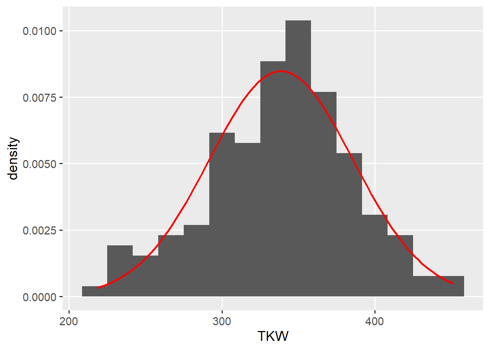
Vamos ver a distribuição dos valores do comprimento da folha de café, mensurado na primeira aula de bioestatística.
Mostrar script
library(rio)# link dos dadoslink <-"https://docs.google.com/spreadsheets/d/1JMrkppvv1BdGKVCekzZPsPYCKcgUWjxpuDlWqejc22s/edit#gid=1453191616"# função para importar os dadosdf <-import(link, dec =",") |>filter(tipo =="Folha")ggplot(df, aes(comprimento)) +geom_histogram(aes(y = ..density..),bins =10) +stat_function(fun = dnorm,geom ="line",color ="red",size =1,args =list(mean =mean(df$comprimento),sd =sd(df$comprimento) ))
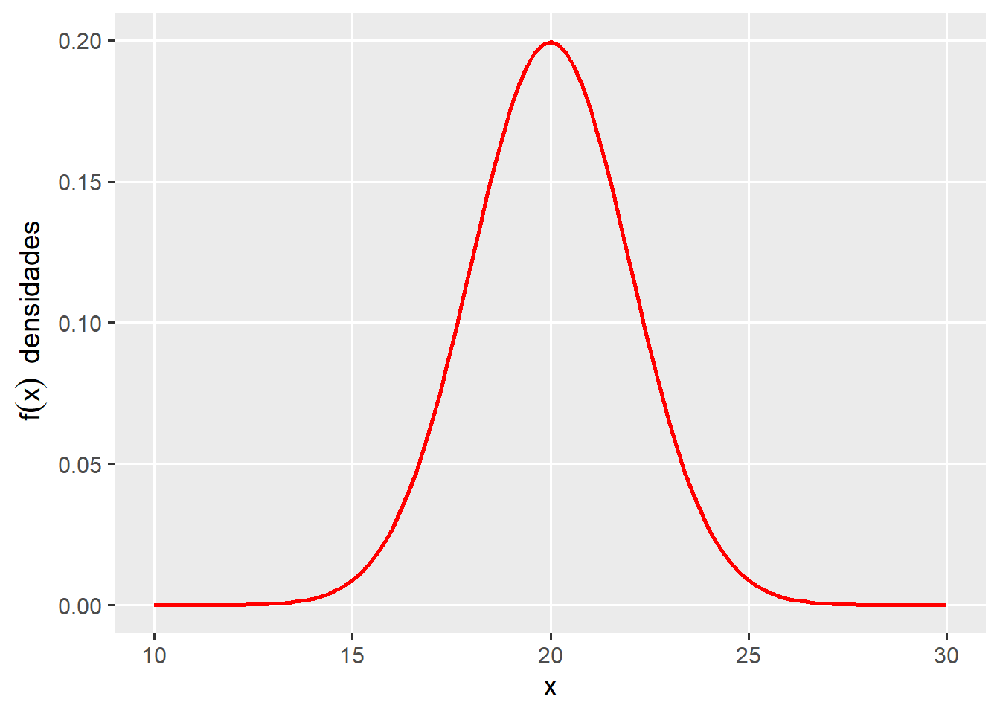
Parâmetros da distribuição
A distribuição normal possui dois parâmetros:
\(\mu\), sendo a média;
\(\sigma\), sendo o desvio padrão.
Estes parâmetros definem a posição e a dispersão do conjunto de dados. Assim, se X se distribui de forma normal e contínua (variável contínua) de \(-\infty < x <+\infty\), a área total sob a curva do modelo é 1.
O modelo da função normal possui a seguinte Função Densidade de Probabilidade:
No exemplo abaixo, é apresentado a distribuição de uma variável aleatória contínua (X) com \(\mu = 20\), e \(\sigma = 2\). Assim, dizemos que \(X \sim N(\mu,\sigma)\), ou seja, segue uma distribuição normal com média \(\mu = 20\) e desvio padrão \(\sigma = 2\).
Abaixo, pode-se observar a distribuição de variáveis aleatórias contínuas com diferentes valores de parâmetros. No gráfico à esquerda, fixa-se a média e varia-se o desvio padrão. No exemplo central, fixa-se o desvio padrão e varia-se a média. No exemplo à direita, varia-se os dois parâmetros.
A probabilidade estatística de um valor estar no intervalo \(x_1,x_2\) é dada pela soma da área abaixo da curva contida no intervalo entre estes dois pontos. Tal área pode ser obtida conforme segue:
\[
P\left(x_{1}\le X \le x_{2}\right)=\int_{x_{1}}^{x_{2}} \frac{1}{\sigma \sqrt{2 \pi}} e^{-\frac{(x-\mu)^{2}}{2 \sigma^{2}}} d x
\]
Considere como exemplo, a altura de planta em uma lavoura de milho que segue uma distribuição normal com média 2 e desvio padrão de 0,2. Pergunda-se: qual é a probabilidade de, ao entrar aleatoriamente nesta lavoura ser encontrada uma planta que mede de 1,75 m a 2 m?
SOLUÇÃO: Para resolver este problema, precisamos encontrar a área sombreada na figura abaixo.
Para calcular esta probabilidade, precisamos encontrar a probabilidade associada a cada quantil, utilizando a função pnorm(). Esta função retorna por padrão a probabilidade \(PX \\le x\). Assim, ao se diminuir a probabilidade de encontrar uma planta com 2 m da probabilidade de encontrar uma planta com até 1,75 m, resolvemos o problema.
# P[X<= 2.0](p2 <-pnorm(q =2, mean =2, sd =0.2))
[1] 0.5
# P[X<= 1.75](p175 <-pnorm(q =1.75, mean =2, sd =0.2))
[1] 0.1056498
p2 - p175
[1] 0.3943502
Aproximação da integral da distribuição Normal
O cálculo da integral da distribuição Normal pode ser aproximado pelo método geométrico por soma de retângulos (Ou Soma de Riemann). Este método possibilita calcular a integral definida em dois pontos (ex., \(x_1\) e \(x_2\)), considerando uma variável com distribuição normal. Assim, a soma das áreas dos retângulos sob a curva da distribuição normal resultarão na probabilidade estatística de um valor estar no intervalo \(x_1,x_2\).
Mostrar script
##### N = 20n <-20p <-0.5x <-seq(0, n, 1)px <-dbinom(x, n, p)df2 <-data.frame(x, px)# Aproximaçãomedia <- n*p # mediadesvp <-sqrt(n*p*(1-p)) # desvio padraoggplot(df2, aes(x = x, y = px)) +geom_bar(stat ="identity",width =1, color ="black",size =0.01,fill ="salmon") +scale_y_continuous(expand =c(0.01, 0)) +xlab("x") +ylab("px e fx") +stat_function(aes(x=x),fun=dnorm,geom ="line",size=1,col="green",args =c(mean = media, sd = desvp))
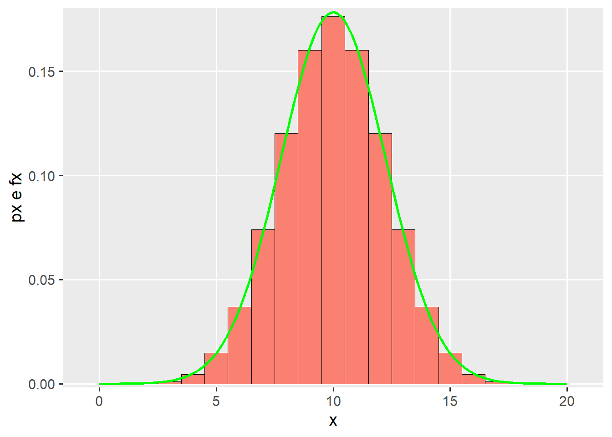
No método geométrico, a função f(x) corresponderá a altura de cada retângulo. A base do retângulo (\(\Delta\)), será dada por:
\[
\Delta=\frac{x_2-x_1}{n}
\]
onde n representa o número de retângulos no intervalo. Ao multiplicar a altura do retângulo pela sua base, temos a área de cada retângulo. Ao somarmos todas as n áreas, teremos a aproximação da probabilidade. Logo, é fácil notar que quanto maior o valor de n melhor será a aproximação do valor calculado pela integral.
A função abaixo pode ser utilizada para aproximar a integral da função da distribuição Normal. A função mnorm é a Função Densidade de Probabilidade e é aplicada dentro da função int_norm para encontrar a altura de cada retângulo. Por padrão, 50000 retângulos são utilizados.
# função normal, f(x)mnorm <-function(x, m, dp){ (1/(dp *sqrt(2* pi) )) *exp(-((x - m)^2)/(2* dp ^2))}# integral definida em dois pontos# (método geométrico por soma de retângulos)int_norm <-function(x1, x2, me, dp, n =50000){# cria uma sequência com n retangulos de x1 a x2 x <-seq(x1, x2, length.out = n)# acha a base da área barea <- (x2 - x1)/n# encontra a altura altrect <-mnorm(x, me, dp)# multiplica a altura pela base e somasum(altrect * barea)}
Abaixo, a função int_norm() é usada para aproximar a probabilidade obtida anteriormente com a função pnorm().
Nota-se que com 50000 retângulos, a aproximação da probabilidade pelo método geométrico apresentou diferença somente na quinta casa após a vírgula, demonstrando uma aproximação satisfatória. Vejamos o impacto do número de retângulos nesta aproximação. Para isso, vamos criar um gráfico para mostrar como esta aproximação vai melhorando com o aumento no número de retângulos. No exemplo, é simulado de 1 até 200 (apenas para fins didáticos). A linha vermelha horizontal representa a probabilidade compudata com a função pnorm().
x <-NULLfor (i in1:200) { x[i] <-int_norm(x1, x2, m, dp, i)}df <-data.frame(x =1:200,prob = x)ggplot(df, aes(x, prob)) +geom_line() +geom_hline(yintercept = p2 - p175,color ="red") +labs(x ="Números de retângulos",y ="Probabilidade aproximada")
Distribuição Normal Padrão
A distribuição Normal Padrão é nada mais que uma distribuição normal com média e desvio padrão fixos (\(\mu = 0; \sigma = 1\)). Uma vez que estes parâmetros são fixos, sempre que desejamos calcular uma probabilidade pode-se recorrer a uma tabela, onde valores de probabilidade já foram previamente calculados para essa única distribuição.
Para isso, precisamos definir uma nova variável aleatória Z, chamada de variável aleatória normal padronizada, dada pela função linear Z.
\[
Z = \frac{X- \mu}{\sigma}
\]
Onde X é uma variável aleatória com distribuição normal com média \(\mu\) e \(\sigma \> 0\).
Como exemplo, vamos simular uma variável aleatória (X) com \(n = 300\) tal que \(X \sim N(\mu = 20; \sigma = 3)\).
set.seed(1) # assegura a reprodutibilidadeX <-round(rnorm(n =300 , mean =20, sd =3), digits =1)hist(X)
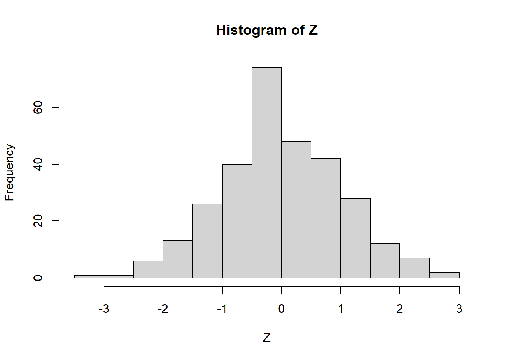
(mu <-mean(X))
[1] 20.102
(sdx <-sd(X))
[1] 2.892973
Podemos criar uma função para criar a nova variável Z com base em um vetor numérico da variável original. Neste caso, a chamei de get_z().
get_z <-function(x){ (x -mean(x)) /sd(x)}# obtém o valor Z de XZ <-get_z(X)hist(Z)
Os valores de Z podem ser interpretados como o número de desvios padrão afastados da média, em uma distribuição normal padrão.
A primeira decimal da variável Z encontra-se na linha e a segunda decimal na coluna. Como exemplo, a probabilidade de Z ser menor ou igual a -1 é de 0,15866.
# valor exatopnorm(-1)
[1] 0.1586553
Note
Retomando o exemplo: Considere como exemplo, a altura de planta em uma lavoura de milho. Esta variável segue uma distribuição normal com média 2 e desvio padrão de 0,2. Pergunda-se: qual é a probabilidade de, ao entrar aleatoriamente nesta lavoura ser encontrada uma planta que mede de 1,75 m a 2 m? Neste caso, utilizando a normal padrão, a resolução é dada por:
me <-2# média sdd <-0.2# desvio padrãoval1 <-1.75# primeiro quantil do intervaloval2 <-2# segundo quantil do intervalo(Z1 <- (val1 - me) / sdd) # Z associado ao primeiro quantil
[1] -1.25
(Z2 <- (val2 - me) / sdd) # Z associado ao segundo quantil
[1] 0
(prob1 <-pnorm(Z1)) # P(Z <= -1,25)
[1] 0.1056498
(prob2 <-pnorm(Z2)) # P(z <= 0)
[1] 0.5
prob2 - prob1 # P(-1,25 <= Z <= 0)
[1] 0.3943502
No exemplo, a área da parte sombreada (probabilidade) é de 0,39455.
A série histórica das vendas de uma determinada fórmula de adubo seguem uma distribuição normal com média 25.000 t e desvio padrão de 2.600 t. Se a empresa fabricante decidir fabricar 30000 toneladas deste adubo para suprir a demanda da safra atual, qual é a probabilidade de que ela não possa atender todas as vendas por estar com a produção esgotada?
R = 0,0272
SOLUÇÃO: encontrar a probabilidade de vender mais que 30000 t.
Mostrar script
me <-25000sdd <-2600val <-30000(Z <- (val - me) / sdd)
[1] 1.923077
Mostrar script
(prob <-1-pnorm(Z))
[1] 0.0272352
Mostrar script
# gráfico da normal padrãonormal <-ggplot() +xlim(c(15900, 34100)) +stat_function(fun = dnorm,geom ="area",fill ="steelblue",xlim =c(30000, 34100),args =list(mean = me,sd = sdd )) +stat_function(fun = dnorm,geom ="line",args =list(mean = me,sd = sdd )) +scale_y_continuous(expand =expansion(mult =c(0, .1)))+labs(x ="Valor original", y ="Probabilidade")+ggtitle("Distribuição da variável original")# gráfico da variável originalpadrao <-ggplot() +stat_function(fun = dnorm,geom ="area",fill ="steelblue",xlim =c(Z, 3.5)) +stat_function(fun = dnorm,geom ="line")+scale_x_continuous(limits =c(-3.5, 3.5), breaks =c(seq(-3, 3, 1)))+scale_y_continuous(expand =expansion(mult =c(0, .1)))+labs(x ="Valor de Z", y ="Probabilidade")+ggtitle("Distribuição da variável padronizada",subtitle =paste("Valor de Z:", round(Z, 4), "; Prob área sombreada:", round(prob, 4)))arrange_ggplot(normal, padrao, ncol =1)
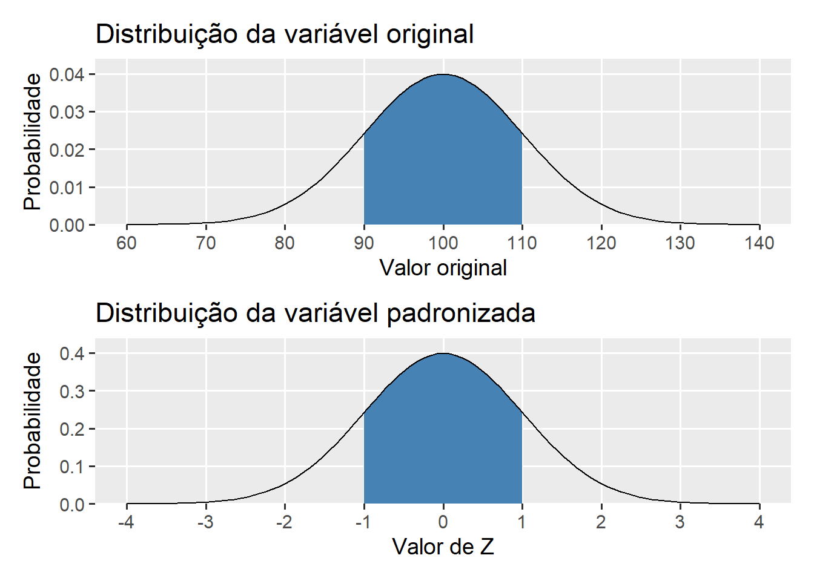
Questão 2
O gerente da empresa que João trabalha resolveu premiar seus vendedores mais eficientes (5%) na venda de insumos. Um levantamento das vendas individuais anuais mostrou que a venda de adubo segue uma distribuição normal com média 240.000 t. e desvio padrão 30.000 t. Qual o volume de vendas mínimo que João deve realizar para ser premiado?
(R = 289.346)
RESOLUÇÃO: encontrar o valor de Z associado aos 5% que mais vendem Z = 1.6448 Valor da variável original associado ao Z = 289.346
Mostrar script
# quantil associado aos 5% que mais vendem(Z <-qnorm(0.95))
[1] 1.644854
Mostrar script
me <-240000sdd <-30000# volume mínimo de vendas(vendas <- Z * sdd + me)
[1] 289345.6
Mostrar script
# gráfico da variável originaloriginal <-ggplot() +xlim(c(135000, 345000)) +stat_function(fun = dnorm,geom ="area",fill ="steelblue",xlim =c(vendas, 360000),args =list(mean = me,sd = sdd ))+stat_function(fun = dnorm,geom ="line",args =list(mean = me,sd = sdd ))+scale_y_continuous(expand =expansion(mult =c(0, .1)))+labs(x ="Valor original", y ="Probabilidade")+ggtitle("Distribuição da variável original")# gráfico da normal padrãopadrao <-ggplot() +xlim(c(-3.5, 3.5)) +stat_function(fun = dnorm,geom ="area",fill ="steelblue",xlim =c(Z, 3.5))+stat_function(fun = dnorm,geom ="line")+scale_x_continuous(limits =c(-3.5, 3.5), breaks =c(seq(-3, 3, 1)))+scale_y_continuous(expand =expansion(mult =c(0, .1)))+labs(x ="Valor de Z", y ="Probabilidade")+ggtitle("Distribuição de Z",subtitle =paste("Valor de Z:", round(Z, 4), "; Prob área sombreada:", round(prob, 4)))
Scale for 'x' is already present. Adding another scale for 'x', which will
replace the existing scale.
Mostrar script
arrange_ggplot(original, padrao, ncol =1)
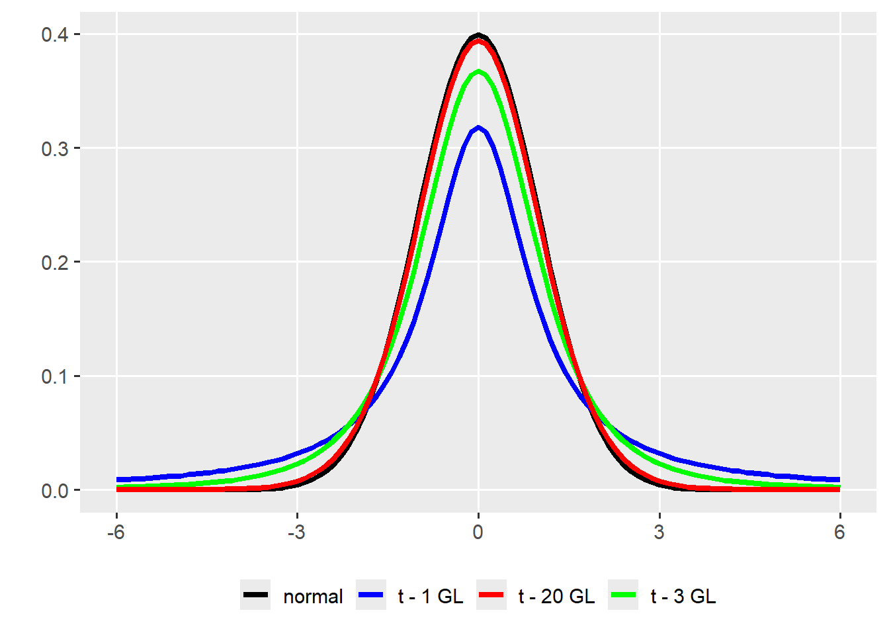
Questão 3
Uma variável aleatória X segue uma distribuição normal com média 100 e desvio padrão 10. Calcule a probabilidade de x estar entre 90 e 110.
R: 0.6826895
RESOLUÇÃO: encontrar os valores de Z associado a 90 e 100, encontrando a área sobre a curva entre estes dois valores.
A alturas de 10000 alunos de um colégio têm distribuição aproximadamente normal com média de 170 cm e desvio padrão de 5 cm. Qual o número esperado de alunos com altura superior a 1,65 m?
R = 8413 alunos (0,8413 * 10000)
RESOLUÇÃO: calcular a probabilidade de alunos com mais de 165 cm, logo achando o número de alunos.
Uma ensacadora de adubos está regulada para que o peso em cada saco seja de 50 Kg com desvio padrão de 5 Kg. Admitindo-se que a distribuição é aproximadamente normal, qual a percentagem de sacos em que o peso de adubo é inferior a 45 Kg?
R (0,1587)
RESOLUÇÃO: encontrar a probabilidade de achar sacos com menos que 45 Kg.
Mostrar script
me <-50sdd <-5val <-45(Z <- (val - me) / sdd)
[1] -1
Mostrar script
(prob <-pnorm(Z))
[1] 0.1586553
Mostrar script
normal <-ggplot() +scale_x_continuous(limits =c(32.5, 67.5),breaks =seq(30, 70, by =5)) +stat_function(fun = dnorm,geom ="area",fill ="steelblue",xlim =c(32.5, val),args =list(mean = me,sd = sdd ))+stat_function(fun = dnorm,geom ="line",size =1,args =list(mean = me,sd = sdd ))+scale_y_continuous(expand =expansion(mult =c(0, .1)))+labs(x ="Peso do saco de adubo",y ="Probabilidade")padrao <-ggplot() +stat_function(fun = dnorm,geom ="area",fill ="steelblue",xlim =c(-3.5, Z))+stat_function(fun = dnorm,geom ="line")+scale_x_continuous(limits =c(-3.5, 3.5), breaks =c(seq(-3, 3, 1)))+scale_y_continuous(expand =expansion(mult =c(0, .1)))+labs(x ="Valor de Z", y ="Probabilidade")+ggtitle("Distribuição da variável padronizada",subtitle =paste("Valor de Z:", round(Z, 4), "\nProb área sombreada:", round(prob, 4)))arrange_ggplot(normal, padrao, ncol =1)
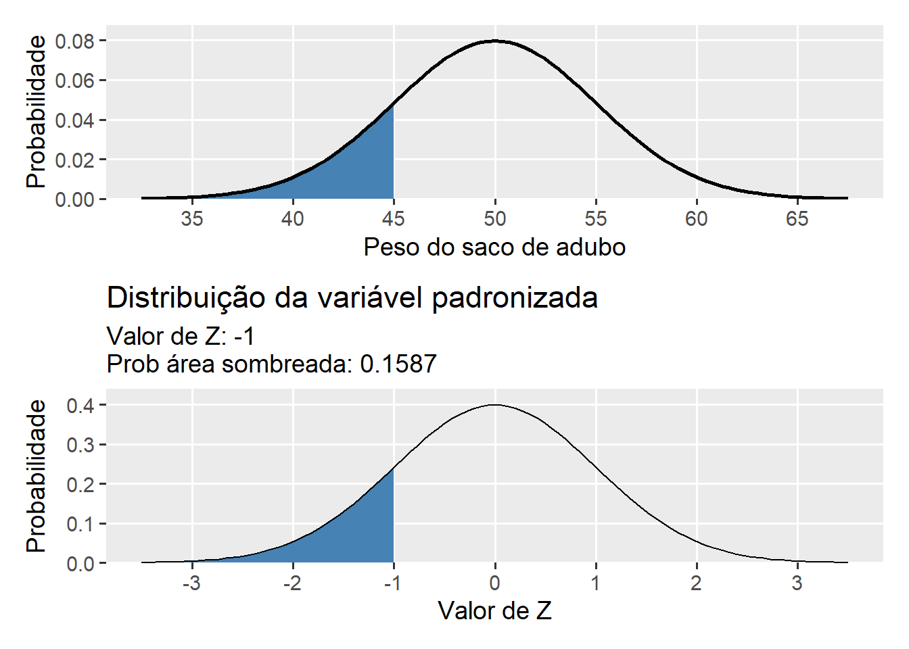
Questão 8
Um lote de frangos com 14.000 frangos apresenta média de peso de 3,0 Kg e desvio padrão de 0,2 Kg. Assumindo que o peso deste lote segue uma distribuição aproximadamente normal, quantos são os frangos que pesam mais que 3300 g?
R = ~ 935 (0,0668072 * 14000)
RESOLUÇÃO: encontrar Z e achar a probabilidade de o peso ser maior que Z.
Mostrar script
me <-3sdd <-0.2val <-3.3(Z <- (val - me) / sdd)
[1] 1.5
Mostrar script
(prob <-1-pnorm(Z))
[1] 0.0668072
Mostrar script
round(prob *14000)
[1] 935
Mostrar script
normal <-ggplot() +scale_x_continuous(limits =c(2.3, 3.7),breaks =seq(2, 4, by =0.5)) +stat_function(fun = dnorm,geom ="area",fill ="steelblue",xlim =c(val, 4),args =list(mean = me,sd = sdd ))+stat_function(fun = dnorm,geom ="line",args =list(mean = me,sd = sdd ))+scale_y_continuous(expand =expansion(mult =c(0, .1)))+labs(x ="Peso do frango (kg)", y ="probabilidade")padrao <-ggplot() +stat_function(fun = dnorm,geom ="area",fill ="steelblue",xlim =c(Z, 3.5))+stat_function(fun = dnorm,geom ="line")+scale_x_continuous(limits =c(-3.5, 3.5),breaks =c(seq(-3, 3, 1)))+scale_y_continuous(expand =expansion(mult =c(0, .1)))+labs(x ="Valor de Z", y ="Probabilidade")+ggtitle("Distribuição da variável padronizada",subtitle =paste("Valor de Z:", round(Z, 4), "\nProb área sombreada:", round(prob, 4)))arrange_ggplot(normal, padrao, ncol =1)
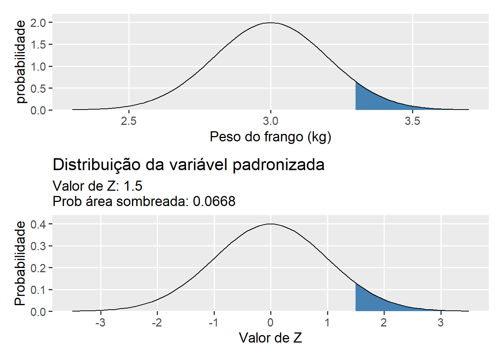
Questão 9
Em uma fazenda de criação de coelhos, um lote com 300 coelhos tem média que segue uma distribuição normal com média de 3,5 Kg com desvio padrão de 250 g. Coelhos com peso de até 3.7 Kg são vendidos a R$ 15,00 o Kg. Coelhos com peso acima de 3,7 Kg são vendidos a R$ 20,00 o Kg. Quantos coelhos serão vendidos ao maior valor de venda?
R (~ 63 coelhos; 0.2119 * 300)
RESOLUÇÃO encontrar o número de coelhos que pesem mais que 3.7 Kg. No gráfico abaixo, a cor vermelha representa a probabilidade de coelhos com menos de 3.7 Kg e a cor azul a probabilidade de encontrar coelhos com mais de 3.7 Kg.
Mostrar script
me <-3.5sdd <-0.25val <-3.7(Z <- (val - me) / sdd)
Um lote gado de corte com 3000 cabeças apresenta 430 Kg de peso vivo por cabeça em média com desvio padrão de 65 Kg e se sabe que segue uma distribuição normal. Na venda deste lote, animais com até 320 Kg são abatidos em um abatedouro A. Por outro lado, animais com peso maior que 320 e menor que 520 Kg são abatidos no abatedouro B. Animais com peso superior a 520 Kg são abatidos no abatedouro C. Considerando estes dados, responda:
a. O número de animais abatidos nos 3 batedouros: 3000
b. O número de animais abatidos no abatedouro A:
c. O número de animais abatidos no abatedouro B:
d. O número de animais abatidos no abatedouro C:
RESOLUÇÃO: encontrar a probabilidade do peso (X) assumir P(X<320), P(320 < X < 520) e P(X > 520).
Scale for 'x' is already present. Adding another scale for 'x', which will
replace the existing scale.
Mostrar script
arrange_ggplot(normal, padrao)
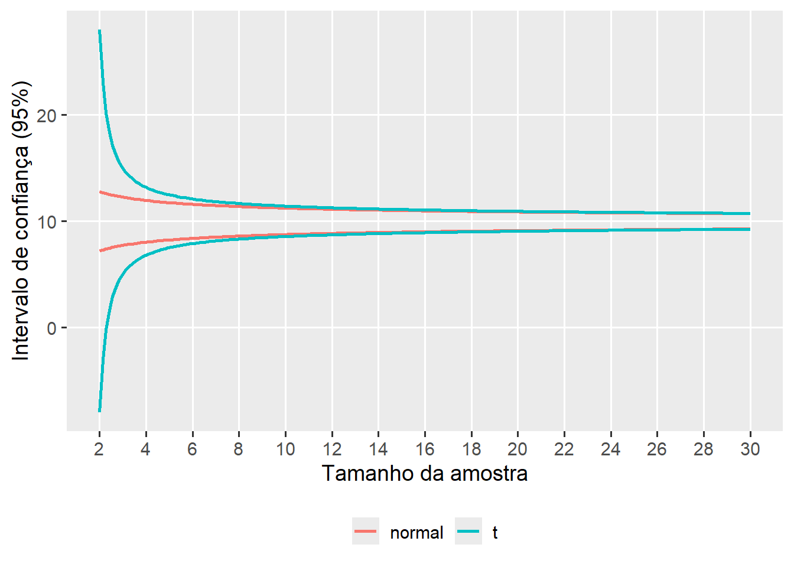
Questão 11
Um agricultor possui uma área de plantio de eucalipto com 2,5 ha e uma densidade de 1500 plantas por ha. O diâmetro a altura do peito (DAP) segue uma distribuição normal, com média de 22 cm e variância de 16 cm\(^2\). O produtor recebeu uma proposta de compra das toras que segue a seguinte condição.
Se as toras apresentarem até 17 cm de DAP, a madeira é destinada para produção de maravalha, com preço por tora de R\$ 28,00.
Se as toras apresentarem DAP maior do que 17 cm, a madeira é destinada para produção de tábuas, com preço por tora de R\$ 46,00.
Considerando o exposto, calcule:
a) O valor estimado de venda de toras para maravalha
Para encontrar este número, precisamos saber quantas árvores com esta medida são esperadas. Para isso, precisamos encontrar a probabilidade de ocorrência de árvores com até 18 cm de DAP e multiplicar essa probabilidade pelo total de árvores.
b) o valor estimado de venda de toras para fabricação de tábua
Para encontrar este número, precisamos saber quantas árvores com com mais de 18 cm se espera. A probabilidade de árvores com mais de 18 cm (P) é dada por
De posse do valor de Z, basta realizar uma inversão da fórmula de padronização para encontrar o valor de x.
\[
Z = (x -- \mu)/\sigma\\
\]
\[
1,644 = (x -- 22)/4\\
\]
\[
1,644\times4 = x -- 22\\
\]
\[
6,576 = x -- 22\\
\]
\[
x = 22 + 6,576
\]
\[
x = 28,576
\]
Então, o peso DAP que somente 5% das toras ultrapassará é de ~28,6 cm.
Distribuição t
A distribuição t de Student é uma distribuição de probabilidade contínua, publicada por William Sealy Gosset sob o pseudônimo Student1.
A distribuição t possui como único parâmetro o Grau Liberdade (GL). Esta distribuição detém caudas mais pesadas que a distribuição normal quando o tamanho da amostra é pequeno e a medida que \(n \\to N\), a distribuição t de Student se aproxima da normal. Note abaixo as diferenças nas curvas quando se compara a distribuição Normal com a distribuição t com diferentes GLs.
Abaixo, é mostrada a Função Densidade de Probabilidade de uma distribuição t com 20 graus liberdade. As áreas sombreadas em azul escuro representam os quantis que acumulam uma área de \(\alpha / 2\) em cada lado da distribuição, de tal forma que a área destacada em verde representa 1 - \(\alpha\), sendo \(\alpha\) a probabilidade de erro.
A estimação por pontos (ex., média) não nos fornece a ideia da margem de erro cometida ao estimar um determinado parâmetro. Por isso, para verificar se uma dada hipótese \(H_0\) (de igualdade) é ou não verdadeira, deve-se utilizar intervalos de confiança ou testes de hipóteses. A construção destes intervalos, e as particularidades dos testes de hipóteses para amostras independentes e dependentes, serão discutidos a seguir. Recomendo como literatura o livro Estatística Básica^analdata-2 escrito pelo Prof. Daniel Furtado Ferreira.
O intervalo de confiança de uma média amostral assumindo uma taxa de erro \(\alpha\) é dado por:
\[
P\left[ {\bar X - {t_{\alpha /2}}\frac{S}{{\sqrt n }} \le \mu \le \bar X + {t_{\alpha /2}}\frac{S}{{\sqrt n }}} \right] = 1 - \alpha
\]
Na expressão acima, \(\bar X\) é a média, \(S\) é o desvio padrão e \(-t\_{\\alpha /2}\) e \(+t\_{\\alpha /2}\) são os quantis inferior e superior, respectivamente, da distribuição t de Student. O intervalo acima indica que o valor do parâmetro (\(\mu\)) tem \(1 - \\alpha\) de chance de estar contido no intervalo.
Exemplo 1 (altura da turma)
Como exemplo de motivação, vamos utilizar os dados referentes a altura (em cm) dos alunos da disciplina de Bioestatística e Experimentação Agrícola, mensurada em sala de aula. A amostra é composta por 20 observações.
Como n = 20, o grau liberdade para encontrar o quantil da distribuição t é 19. O quantil associado a este Grau Liberdade, considerando \(\alpha = 0,05\) é encontrado na tabela da distribuição t. Nesta tabela, o valor de
Tamém podemos encontrar este quantil utilizando a função qt(). No próximo código, o quantil (2.5% e 97.5%), a média e o desvio padrão são calculados. Note que
(quantil_t <-qt(c(0.025, 0.975), df =19))
[1] -2.093024 2.093024
(media <-mean(df_altura$Altura))
[1] 172.6
(desvpad <-sd(df_altura$Altura))
[1] 7.639234
De posse destas informações, podemos calcular o intervalo de confiança (limite inferior, LI e limite superior, LS)
Considere um aviário com 15000 frangos. O criador realizou a amostragem de 25 frangos aleatoriamente para realizar uma estimativa da média do peso do lote visando a programação para abate. Após analisar as pesagens coletadas, o produtor encontrou uma média de 2,83 Kg e um desvio padrão de 0,27 Kg. Pergunta-se: Qual o intervalo de 95% para a média estimada?
Mostrar script
df3 <-tibble(media =2.83,desvpad =0.27,LI = media -get_ci_t(media, desvpad, n =25),LS = media +get_ci_t(media, desvpad, n =25))
Abaixo, são simuladas 4 amostras de n = 20 com médias igual a 10 e desvios padrões variantes. Note como o intervalo de confiança é menor a medida em que o desvio padrão é mais baixo.
Mostrar script
df4 <-tibble(amostra =paste0(1:4),media =c(10, 10, 10, 10),desvpad =c(1, 4, 6, 8),LI = media -get_ci_t(media, desvpad, n =20),LS = media +get_ci_t(media, desvpad, n =20),lab =paste0("dp: ", desvpad))
df_n <-tibble(dist ="normal",n =seq(2, 30, length.out =200),media =10,desvpad =2,UL = media +qnorm(0.975) * desvpad /sqrt(n),LL = media -qnorm(0.975) * desvpad /sqrt(n))df_dists <-rbind(df_t, df_n)# criar o gráfico com os intervalosggplot(df_dists, aes(color = dist)) +geom_line(aes(x = n, y = LL), size =1) +geom_line(aes(x = n, y = UL), size =1) +scale_x_continuous(breaks =seq(2, 30, by =2)) +labs(x ="Tamanho da amostra",y ="Intervalo de confiança (95%)") +theme(legend.position ="bottom",legend.title =element_blank())
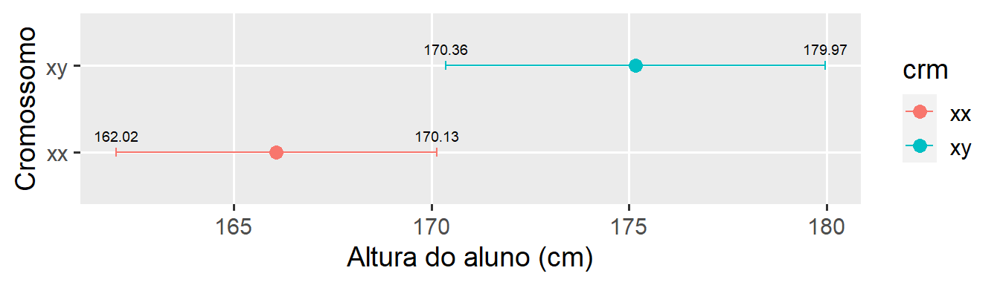
Testes de hipóteses
Os testes de hipóteses são utilizados para determinar quais resultados de um estudo científico podem levar à rejeição da hipótese nula (\(H_0\)) a um nível de significância pré–estabelecido. Os testes de hipóteses aqui demonstrados tem como objetivo:
1) verificar se determinada amostra difrere ou não de zero (\({H_0}:\mu = 0\)) 2) Verificar se duas amostras independentes são ou não iguais (\({H_0}:{\mu _1} = {\mu _2}\)). 2) Verificar se duas amostras dependentes possuem desvios iguais a zero (\({H_0}:d_i = 0\)).
Teste de hipótese para uma amostra
No caso de uma amostra, a estatística teste (t calculado) é dada por
\[
{t_{c(\alpha; \nu)}} = \frac{{\bar Y - \mu }}{{\frac{{{S_Y}}}{{\sqrt n }}}}
\]
Onde \(\alpha\) é a probabilidade de erro, \(\nu\) é o grau de liberdade (nº de amostras menos 1), \(\bar Y\) é a média da amostra, \(S_y\) é o desvio padrão da amostra e \(n\) é o número de amostras.
Vamos retornar ao exemplo da altura da turma. A média da amostragem é de 172,6 cm. Digamos que a altura média dos alunos da UFSC é de 165 cm. Pode-se dizer que a estimativa da altura da turma de Bioestatística a 165 cm, considerando uma taxa de erro de 5%?
Como o t calculado (4,455) é maior que o t tabelado (2,09), rejeita-se a hipótese nula e afirma-se que a estimativa da média da altura da turma difere de 165 cm. Este mesmo teste pode ser realizado com a função t.test().
# t tabeladot.test(altura, mu =165)
One Sample t-test
data: altura
t = 4.4492, df = 19, p-value = 0.0002752
alternative hypothesis: true mean is not equal to 165
95 percent confidence interval:
169.0247 176.1753
sample estimates:
mean of x
172.6
Teste de hipóteses para amostras independentes
Neste tipo de teste de hipótese, o objetivo é comparar se a estimativa da média de um grupo “A” difere estatisticamente da estimativa da média de um grupo “B”. Utilizaremos como amostras os dados do diâmetro dos grãos obtidas na primeira aula, onde deseja-se comparar se o diâmetro entre os grupos “vermelho” e “verde” difere estatisticamente.
Onde \(\bar x_1\), \(n_1\) e \(S^2\_{x_1}\) são a média, o tamanho da amostra e a variância para a amostra 1; \(\bar x_2\), \(n_2\) e \(S^2\_{x_2}\) são a média, o tamanho da amostra e a variância para a amostra 2. Vamos calcular estas estatísticas para os dados em questão. A estatística de teste é então comparada com o t tabelado com 26 (13 + 15 - 2) Graus Liberdade.
Como \(5,084 > 2,055\), rejeita-se a hipótese \(H_0\) e conclui-se que as médias dos dois grupos são estatisticamente distintas. Usando a função t.test(), este teste de hipótese é realizado com:
vermelho <- df_grao |>subset(COR_GRAO =="vermelho") |>pull(DIAM_GRAO)verde <- df_grao |>subset(COR_GRAO =="verde") |>pull(DIAM_GRAO)# testa se as amostras difrem entre sit.test(vermelho, verde, var.equal =TRUE)
Two Sample t-test
data: vermelho and verde
t = 5.0962, df = 26, p-value = 2.608e-05
alternative hypothesis: true difference in means is not equal to 0
95 percent confidence interval:
1.191932 2.803452
sample estimates:
mean of x mean of y
10.81769 8.82000
O pacote ggstatplot pode ser utilizado para confecionar gráficos que incluem teste de hipóteses.
Mostrar script
library(ggstatsplot)ggbetweenstats(df_grao, x = COR_GRAO,y = DIAM_GRAO,plot.type ="box",bf.message =FALSE,var.equal =TRUE)
Teste de hipóteses para amostras dependentes
As formas de comparação discutidas acima consideram as amostras como sendo independentes entre si. Em certas ocasiões, um mesmo indivíduo de uma amostra é medido ao longo do tempo ou avaliado antes ou depois da aplicação de um determinado tratamento.
Assim, nessas ocasiões, é possível avaliar se a diferença média das observações é estatisticamente igual a zero ou não. Se esta diferença for estatisticamente diferente de zero, pode-se afirmar que tal tratamento possui efeito significativo.
A estatística do teste t para amostras pareadas é dada por
Onde \(\bar D\) é a média das diferenças e \(S_D\) é o desvio padrão das diferenças.
A fim de determinar a eficiência de um medicamento antitérmico, a temperatura corporal (em graus Celsius) de 7 indivíduos foi medida. Em seguida, foi administrado o medicamento e após uma hora a temperatura foi medida novamente.
antes <- paired$ANTESdepois <- paired$DEPOISt.test(depois, antes, paired =TRUE, var.equal =TRUE)
Paired t-test
data: depois and antes
t = -8.083, df = 6, p-value = 0.0001921
alternative hypothesis: true mean difference is not equal to 0
95 percent confidence interval:
-1.2096712 -0.6474716
sample estimates:
mean difference
-0.9285714
Note que o mesmo resultado é obtido ao se realizar um teste para uma amostra utilizando a diferença calculada.
t.test(paired$DIFERENCA, var.equal =TRUE)
One Sample t-test
data: paired$DIFERENCA
t = -8.083, df = 6, p-value = 0.0001921
alternative hypothesis: true mean is not equal to 0
95 percent confidence interval:
-1.2096712 -0.6474716
sample estimates:
mean of x
-0.9285714
Exercícios distribuição t
Questão 1
Um experimento visando comparar dois híbridos de milho (H1 e H2) obteve dados da massa de grãos (MGRA) e número de grãos (NGRA) por espiga, apresentados abaixo.
Assumindo que as variáveis MGRA e NGRA seguem uma distribuição normal, utilize um teste t para testar a hipótese de diferença das médias destas variáveis entre os dois híbridos. Após a obtenção dos resultados, realize a interpretação para cada variável.
A aplicação no software R, é dada no seguinte exemplo
Mostrar script
t.test(MGRA ~ HIBRIDO, data = df, var.equal =TRUE)
Two Sample t-test
data: MGRA by HIBRIDO
t = 3.2725, df = 18, p-value = 0.00423
alternative hypothesis: true difference in means between group H1 and group H2 is not equal to 0
95 percent confidence interval:
28.03252 128.56748
sample estimates:
mean in group H1 mean in group H2
222.7 144.4
Two Sample t-test
data: g1 and g2
t = 1.6925, df = 65, p-value = 0.09534
alternative hypothesis: true difference in means is not equal to 0
95 percent confidence interval:
-0.468055 5.668615
sample estimates:
mean of x mean of y
22.00719 19.40691
t.test(NGRA ~ HIBRIDO, data = df, var.equal =TRUE)
Two Sample t-test
data: NGRA by HIBRIDO
t = 2.3802, df = 18, p-value = 0.02856
alternative hypothesis: true difference in means between group H1 and group H2 is not equal to 0
95 percent confidence interval:
15.90901 255.29099
sample estimates:
mean in group H1 mean in group H2
593.5 457.9
O valor de t tabelado para 5% de erro e grau liberdade de 18 é 2,10.
qt(0.975, df =18)
[1] 2.100922
Considerando os resultados do teste de hipótese, rejeita-se a hipótese nula para as duas variáveis e afirma-se que as médias dos dois híbridos para MGRA e NGRA por espiga são diferentes.
Questão 2
Nos últimos anos, o melhoramento ganhou ferramentas que aumentam a eficiência no desenvolvimento de novas cultivares. Dentre essas, pode-se citar a genotipagem por meio do mapeamento genético e marcadores moleculares, gerando uma infinidade de informações genéticas. No entanto, mesmo com o avanço exponencial desse ramo da ciência, há ainda uma enorme necessidade de obtenção de dados fenotípicos confiáveis 2.
Técnicas que utilizam visão computacional e análise de imagens possibilitam ganho de tempo e, principalmente recursos durante as etapas do melhoramento. Com tais análises, é possível obter grande quantidade de dados em pouco tempo. No entanto, é necessário que tais medidas sejam acuradas, ou seja, representem fidedignamente os valores reais observados. Para validar a obtenção de medidas de comprimento e largura de folhas via imagens, medidas de comprimento e largura de 15 folhas foram obtidas utilizando duas técnicas. A primeira, utilizando análises de imagens no pacote R pliman e a segunda por meio do auxílio de uma régua. Os dados coletados são encontrados a seguir.
Considerando que as medidas (régua e foto) foram obtidas no mesmo indivíduo, utilize um teste t pareado para testar, a 5% de probabilidade de erro, se o método de mensuração por imagem difere do método manual (por régua) para as variáveis em questão.
One Sample t-test
data: dif
t = -0.48217, df = 10, p-value = 0.6401
alternative hypothesis: true mean is not equal to 0
95 percent confidence interval:
-0.3321539 0.2139721
sample estimates:
mean of x
-0.05909091
# mesma coisa informando as duas médias com 'paired = TRUE't.test(comprimento ~ metodo, data = df, paired =TRUE)
Paired t-test
data: comprimento by metodo
t = -0.48217, df = 10, p-value = 0.6401
alternative hypothesis: true mean difference is not equal to 0
95 percent confidence interval:
-0.3321539 0.2139721
sample estimates:
mean difference
-0.05909091
# variável largura da folhat.test(largura ~ metodo, data = df, paired =TRUE)
Paired t-test
data: largura by metodo
t = 1.5996, df = 10, p-value = 0.1408
alternative hypothesis: true mean difference is not equal to 0
95 percent confidence interval:
-0.02250533 0.13705079
sample estimates:
mean difference
0.05727273
Questão 3
Um Engenheiro Florestal realizou mensurações do Diâmetro a Altura do Peito em duas áreas plantadas de eucalipto. Ambas as áreas possuem 05 anos de idade, mas se encontram em diferentes tipos de solo. Após coletar os dados, os seguintes valores foram obtidos:
Parâmetro
Área 1
Área 2
\(\bar X (cm)\)
11,5
13,6
S (cm)
3
5
n (contagem)
23
31
Com base nessas informações, calcule o intervalo de confiança de 95% para as médias do DAP da área 1 e área 2 e, com base nos intervalos, justifique se a média do DAP das duas áreas pode ser considerada estatisticamente diferente.
# A tibble: 2 × 6
area media desvpad n LI LS
<chr> <dbl> <dbl> <dbl> <dbl> <dbl>
1 Área 1 11.5 3 20 10.1 12.9
2 Área 2 13.6 5 31 11.8 15.4
# criar o gráfico com os intervalosggplot(df, aes(x = media, y = area)) +geom_errorbar(aes(xmin = LI,xmax = LS),width =0.1) +geom_point(size =3) +labs(x ="Diâmetro a Altura do Peito (cm)",y ="")
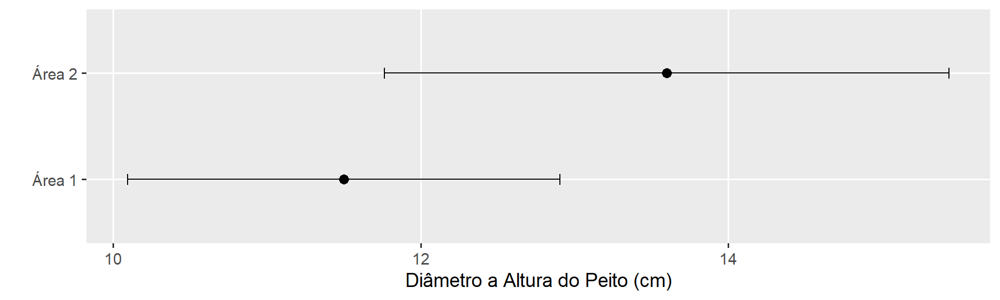
Considerando que os intervalos de confiança se cruzam, pode-se afirmar que as médias não diferem estatisticamente. Vamos testar esta hipótese utilizando um teste t?. Neste caso, o t calculado é comparado com o t tabelado a 52 (23 + 31 - 2) graus liberdade.
Como o t calculado foi menor que o tabelado, não rejeita-se a hipótese nula de diferença entre as médias, assumindo-se que as médias são estatisticamente iguais.
---title: "4. Distribuições Contínuas"execute: out-width: maxwidth---# Distribuição NormalA distribuição normal é um modelo bastante útil na estatística, pois sua função densidade de probabilidade (FDP) está associada ao fato de que aproxima de forma bastante satisfatória as curvas de frequências observadas quando se mensura diversas variáveis biológicas (ex., altura, massa, comprimento, etc). Como exemplo, vamos ver a distribuição da massa de mil grãos de híbridos de milho, disponíveis no conjunto de dados `data_ge` do pacote `metan`. Neste exemplo, a linha vermelha representa a distribuição normal.```{r warning=FALSE, message=FALSE}#| code-fold: true#| out-width: "100%"library(tidyverse)library(metan)# tema personalizadomy_theme <-theme_gray(base_size =14) +theme(panel.grid.minor =element_blank())# define o tema para todos os gráficostheme_set(my_theme)ggplot(data_ge2, aes(TKW)) +geom_histogram(aes(y = ..density..),bins =15) +stat_function(fun = dnorm,geom ="line",color ="red",size =1,args =list(mean =mean(data_ge2$TKW),sd =sd(data_ge2$TKW) ))```Vamos ver a distribuição dos valores do comprimento da folha de café, mensurado na primeira aula de bioestatística.```{r}#| code-fold: true#| out-width: "100%"library(rio)# link dos dadoslink <-"https://docs.google.com/spreadsheets/d/1JMrkppvv1BdGKVCekzZPsPYCKcgUWjxpuDlWqejc22s/edit#gid=1453191616"# função para importar os dadosdf <-import(link, dec =",") |>filter(tipo =="Folha")ggplot(df, aes(comprimento)) +geom_histogram(aes(y = ..density..),bins =10) +stat_function(fun = dnorm,geom ="line",color ="red",size =1,args =list(mean =mean(df$comprimento),sd =sd(df$comprimento) ))```## Parâmetros da distribuiçãoA distribuição normal possui dois parâmetros:- $\mu$, sendo a média;- $\sigma$, sendo o desvio padrão.Estes parâmetros definem a posição e a dispersão do conjunto de dados. Assim, se *X* se distribui de forma normal e contínua (variável contínua) de $-\infty < x <+\infty$, a área total sob a curva do modelo é 1.O modelo da função normal possui a seguinte Função Densidade de Probabilidade:$${f}(x) = \frac{1}{{\sqrt {2\pi {\sigma ^2}} }}{e^{ - \frac{{{{(x - \mu )}^2}}}{{2{\sigma ^2}}}}}-\infty< x < \infty$$No exemplo abaixo, é apresentado a distribuição de uma variável aleatória contínua (*X*) com $\mu = 20$, e $\sigma = 2$. Assim, dizemos que $X \sim N(\mu,\sigma)$, ou seja, segue uma distribuição normal com média $\mu = 20$ e desvio padrão $\sigma = 2$.```{r}#| code-fold: true#| out-width: "100%"#| ggplot() +stat_function(fun = dnorm,geom ="line",color ="red",size =1,xlim =c(10, 30),args =list(mean =20,sd =2 )) +labs(y =bquote(f(x)~~"densidades"),x ="x")```Abaixo, pode-se observar a distribuição de variáveis aleatórias contínuas com diferentes valores de parâmetros. No gráfico à esquerda, fixa-se a média e varia-se o desvio padrão. No exemplo central, fixa-se o desvio padrão e varia-se a média. No exemplo à direita, varia-se os dois parâmetros.```{r fig.width=12, fig.height=4}#| code-fold: true#| code-summary: "Mostrar código"#| get_norm <-function(mu, sd, col ="blue"){stat_function(fun=dnorm,geom ="line",size =1,col=col,args =c(mean=mu,sd=sd))}p1 <-ggplot(data.frame(x=c(0,30)),aes(x=x)) +get_norm(10, 1) +get_norm(10, 2, "green") +get_norm(10, 4, "red")p2 <-ggplot(data.frame(x=c(0,30)),aes(x=x)) +get_norm(6, 2) +get_norm(10, 2, "green") +get_norm(14, 2, "red")p3 <-ggplot(data.frame(x=c(0,30)),aes(x=x)) +get_norm(6, 1) +get_norm(10, 2, "green") +get_norm(14, 4, "red")arrange_ggplot(p1, p2, p3)```## Calculando as probabilidadesA probabilidade estatística de um valor estar no intervalo $x_1,x_2$ é dada pela soma da área abaixo da curva contida no intervalo entre estes dois pontos. Tal área pode ser obtida conforme segue:$$P\left(x_{1}\le X \le x_{2}\right)=\int_{x_{1}}^{x_{2}} \frac{1}{\sigma \sqrt{2 \pi}} e^{-\frac{(x-\mu)^{2}}{2 \sigma^{2}}} d x$$Considere como exemplo, a altura de planta em uma lavoura de milho que segue uma distribuição normal com média 2 e desvio padrão de 0,2. Pergunda-se: qual é a probabilidade de, ao entrar aleatoriamente nesta lavoura ser encontrada uma planta que mede de 1,75 m a 2 m?> SOLUÇÃO: Para resolver este problema, precisamos encontrar a área sombreada na figura abaixo.```{r}#| code-fold: true#| out-width: "100%"me <-2sdd <-0.2args <-list(mean = me,sd = sdd)ggplot() +scale_x_continuous(limits =c(1, 3),breaks =seq(1, 3, by =0.25)) +stat_function(fun = dnorm,geom ="area",fill ="steelblue",xlim =c(1.75, 2),args = args)+stat_function(fun = dnorm,geom ="line",size =1,args = args)+scale_y_continuous(expand =expansion(mult =c(0, .1)))+labs(x ="Altura da planta (m)",y ="Probabilidade")```Para calcular esta probabilidade, precisamos encontrar a probabilidade associada a cada quantil, utilizando a função `pnorm()`. Esta função retorna por padrão a probabilidade $PX \\le x$. Assim, ao se diminuir a probabilidade de encontrar uma planta com 2 m da probabilidade de encontrar uma planta com até 1,75 m, resolvemos o problema.```{r}# P[X<= 2.0](p2 <-pnorm(q =2, mean =2, sd =0.2))# P[X<= 1.75](p175 <-pnorm(q =1.75, mean =2, sd =0.2))p2 - p175```## Aproximação da integral da distribuição NormalO cálculo da integral da distribuição Normal pode ser aproximado pelo método geométrico por soma de retângulos (Ou [Soma de Riemann](https://pt.wikipedia.org/wiki/Soma_de_Riemann)). Este método possibilita calcular a integral definida em dois pontos (ex., $x_1$ e $x_2$), considerando uma variável com distribuição normal. Assim, a soma das áreas dos retângulos sob a curva da distribuição normal resultarão na probabilidade estatística de um valor estar no intervalo $x_1,x_2$.```{r}#| code-fold: true#| out-width: "100%"#| ##### N = 20n <-20p <-0.5x <-seq(0, n, 1)px <-dbinom(x, n, p)df2 <-data.frame(x, px)# Aproximaçãomedia <- n*p # mediadesvp <-sqrt(n*p*(1-p)) # desvio padraoggplot(df2, aes(x = x, y = px)) +geom_bar(stat ="identity",width =1, color ="black",size =0.01,fill ="salmon") +scale_y_continuous(expand =c(0.01, 0)) +xlab("x") +ylab("px e fx") +stat_function(aes(x=x),fun=dnorm,geom ="line",size=1,col="green",args =c(mean = media, sd = desvp))```No método geométrico, a função *f(x)* corresponderá a altura de cada retângulo. A base do retângulo ($\Delta$), será dada por:$$\Delta=\frac{x_2-x_1}{n}$$onde *n* representa o número de retângulos no intervalo. Ao multiplicar a altura do retângulo pela sua base, temos a área de cada retângulo. Ao somarmos todas as *n* áreas, teremos a aproximação da probabilidade. Logo, é fácil notar que quanto maior o valor de *n* melhor será a aproximação do valor calculado pela integral.A função abaixo pode ser utilizada para aproximar a integral da função da distribuição Normal. A função `mnorm` é a Função Densidade de Probabilidade e é aplicada dentro da função `int_norm` para encontrar a altura de cada retângulo. Por padrão, 50000 retângulos são utilizados.```{r}# função normal, f(x)mnorm <-function(x, m, dp){ (1/(dp *sqrt(2* pi) )) *exp(-((x - m)^2)/(2* dp ^2))}# integral definida em dois pontos# (método geométrico por soma de retângulos)int_norm <-function(x1, x2, me, dp, n =50000){# cria uma sequência com n retangulos de x1 a x2 x <-seq(x1, x2, length.out = n)# acha a base da área barea <- (x2 - x1)/n# encontra a altura altrect <-mnorm(x, me, dp)# multiplica a altura pela base e somasum(altrect * barea)}```Abaixo, a função `int_norm()` é usada para aproximar a probabilidade obtida anteriormente com a função `pnorm()`.```{r}x1 <-1.75# x_0x2 <-2# x_1m <-2# médiadp <-0.2# desvio padrão# método geométrico(aprox <-int_norm(x1, x2, m, dp))(fun_pnorm <- p2 - p175)fun_pnorm - aprox```Nota-se que com 50000 retângulos, a aproximação da probabilidade pelo método geométrico apresentou diferença somente na quinta casa após a vírgula, demonstrando uma aproximação satisfatória. Vejamos o impacto do número de retângulos nesta aproximação. Para isso, vamos criar um gráfico para mostrar como esta aproximação vai melhorando com o aumento no número de retângulos. No exemplo, é simulado de 1 até 200 (apenas para fins didáticos). A linha vermelha horizontal representa a probabilidade compudata com a função `pnorm()`.```{r}#| out-width: "100%"x <-NULLfor (i in1:200) { x[i] <-int_norm(x1, x2, m, dp, i)}df <-data.frame(x =1:200,prob = x)ggplot(df, aes(x, prob)) +geom_line() +geom_hline(yintercept = p2 - p175,color ="red") +labs(x ="Números de retângulos",y ="Probabilidade aproximada")```## Distribuição Normal PadrãoA distribuição Normal Padrão é nada mais que uma distribuição normal com média e desvio padrão fixos ($\mu = 0; \sigma = 1$). Uma vez que estes parâmetros são fixos, sempre que desejamos calcular uma probabilidade pode-se recorrer a uma tabela, onde valores de probabilidade já foram previamente calculados para essa única distribuição.Para isso, precisamos definir uma nova variável aleatória *Z*, chamada de variável aleatória normal padronizada, dada pela função linear *Z*.$$Z = \frac{X- \mu}{\sigma}$$Onde *X* é uma variável aleatória com distribuição normal com média $\mu$ e $\sigma \> 0$.Como exemplo, vamos simular uma variável aleatória (X) com $n = 300$ tal que $X \sim N(\mu = 20; \sigma = 3)$.```{r}set.seed(1) # assegura a reprodutibilidadeX <-round(rnorm(n =300 , mean =20, sd =3), digits =1)hist(X)(mu <-mean(X))(sdx <-sd(X))```Podemos criar uma função para criar a nova variável *Z* com base em um vetor numérico da variável original. Neste caso, a chamei de `get_z()`.```{r}#| out-width: "100%"get_z <-function(x){ (x -mean(x)) /sd(x)}# obtém o valor Z de XZ <-get_z(X)hist(Z)```Os valores de *Z* podem ser interpretados como o número de desvios padrão afastados da média, em uma distribuição normal padrão.```{r}#| code-fold: true#| out-width: "100%"ggplot() +stat_function(fun = dnorm,geom ="area",fill ="cyan",xlim =c(-3, 3),alpha =1) +stat_function(fun = dnorm,geom ="area",fill ="green",xlim =c(-2, 2),alpha =1) +stat_function(fun = dnorm,geom ="area",fill ="salmon",xlim =c(-1, 1),alpha =1) +stat_function(fun = dnorm,geom ="line")+scale_x_continuous(limits =c(-4, 4), breaks =c(seq(-5, 5, 1))) +scale_y_continuous(expand =expansion(mult =c(0, .5)),breaks =NULL) +labs(x ="Z",y ="")+theme_gray(base_size =16) +theme(panel.grid =element_blank(),panel.background =element_rect(fill =NA))```Desta forma, uma tabela contendo a área sobre a curva desta distribuição de *Z* pode ser utilizada.[](https://github.com/TiagoOlivoto/classes/blob/master/FIT5306/data/tabela_normal_padr%C3%A3o.pdf)A primeira decimal da variável Z encontra-se na linha e a segunda decimal na coluna. Como exemplo, a probabilidade de Z ser menor ou igual a -1 é de 0,15866.```{r}# valor exatopnorm(-1)```::: callout-noteRetomando o exemplo: Considere como exemplo, a altura de planta em uma lavoura de milho. Esta variável segue uma distribuição normal com média 2 e desvio padrão de 0,2. Pergunda-se: qual é a probabilidade de, ao entrar aleatoriamente nesta lavoura ser encontrada uma planta que mede de 1,75 m a 2 m? Neste caso, utilizando a normal padrão, a resolução é dada por::::```{r}me <-2# média sdd <-0.2# desvio padrãoval1 <-1.75# primeiro quantil do intervaloval2 <-2# segundo quantil do intervalo(Z1 <- (val1 - me) / sdd) # Z associado ao primeiro quantil(Z2 <- (val2 - me) / sdd) # Z associado ao segundo quantil(prob1 <-pnorm(Z1)) # P(Z <= -1,25)(prob2 <-pnorm(Z2)) # P(z <= 0)prob2 - prob1 # P(-1,25 <= Z <= 0)```No exemplo, a área da parte sombreada (probabilidade) é de 0,39455.```{r}#| code-fold: true#| out-width: "100%"normal <-ggplot() +scale_x_continuous(limits =c(1.2, 2.8)) +stat_function(fun = dnorm,geom ="area",fill ="steelblue",xlim =c(1.75, 2),args =list(mean = me,sd = sdd ))+stat_function(fun = dnorm,geom ="line",args =list(mean = me,sd = sdd )) +scale_y_continuous(expand =expansion(mult =c(0, .1)))+labs(x ="Valor original (altura em m)", y ="Probabilidade")padrao <-ggplot() +scale_x_continuous(limits =c(-4, 4)) +stat_function(fun = dnorm,geom ="area",fill ="steelblue",xlim =c(Z1, Z2))+stat_function(fun = dnorm,geom ="line")+scale_y_continuous(expand =expansion(mult =c(0, .1)))+labs(x ="Valor de Z", y ="Probabilidade")arrange_ggplot(normal, padrao, ncol =1)```## Exercícios### Questão 1A série histórica das vendas de uma determinada fórmula de adubo seguem uma distribuição normal com média 25.000 t e desvio padrão de 2.600 t. Se a empresa fabricante decidir fabricar 30000 toneladas deste adubo para suprir a demanda da safra atual, qual é a probabilidade de que ela não possa atender todas as vendas por estar com a produção esgotada?> R = 0,0272SOLUÇÃO: encontrar a probabilidade de vender mais que 30000 t.```{r}#| code-fold: true#| out-width: "100%"me <-25000sdd <-2600val <-30000(Z <- (val - me) / sdd)(prob <-1-pnorm(Z))# gráfico da normal padrãonormal <-ggplot() +xlim(c(15900, 34100)) +stat_function(fun = dnorm,geom ="area",fill ="steelblue",xlim =c(30000, 34100),args =list(mean = me,sd = sdd )) +stat_function(fun = dnorm,geom ="line",args =list(mean = me,sd = sdd )) +scale_y_continuous(expand =expansion(mult =c(0, .1)))+labs(x ="Valor original", y ="Probabilidade")+ggtitle("Distribuição da variável original")# gráfico da variável originalpadrao <-ggplot() +stat_function(fun = dnorm,geom ="area",fill ="steelblue",xlim =c(Z, 3.5)) +stat_function(fun = dnorm,geom ="line")+scale_x_continuous(limits =c(-3.5, 3.5), breaks =c(seq(-3, 3, 1)))+scale_y_continuous(expand =expansion(mult =c(0, .1)))+labs(x ="Valor de Z", y ="Probabilidade")+ggtitle("Distribuição da variável padronizada",subtitle =paste("Valor de Z:", round(Z, 4), "; Prob área sombreada:", round(prob, 4)))arrange_ggplot(normal, padrao, ncol =1)```### Questão 22. O gerente da empresa que João trabalha resolveu premiar seus vendedores mais eficientes (5%) na venda de insumos. Um levantamento das vendas individuais anuais mostrou que a venda de adubo segue uma distribuição normal com média 240.000 t. e desvio padrão 30.000 t. Qual o volume de vendas mínimo que João deve realizar para ser premiado?> (R = 289.346)RESOLUÇÃO: encontrar o valor de Z associado aos 5% que mais vendem Z = 1.6448 Valor da variável original associado ao Z = 289.346```{r}#| code-fold: true#| out-width: "100%"#| # quantil associado aos 5% que mais vendem(Z <-qnorm(0.95))me <-240000sdd <-30000# volume mínimo de vendas(vendas <- Z * sdd + me)# gráfico da variável originaloriginal <-ggplot() +xlim(c(135000, 345000)) +stat_function(fun = dnorm,geom ="area",fill ="steelblue",xlim =c(vendas, 360000),args =list(mean = me,sd = sdd ))+stat_function(fun = dnorm,geom ="line",args =list(mean = me,sd = sdd ))+scale_y_continuous(expand =expansion(mult =c(0, .1)))+labs(x ="Valor original", y ="Probabilidade")+ggtitle("Distribuição da variável original")# gráfico da normal padrãopadrao <-ggplot() +xlim(c(-3.5, 3.5)) +stat_function(fun = dnorm,geom ="area",fill ="steelblue",xlim =c(Z, 3.5))+stat_function(fun = dnorm,geom ="line")+scale_x_continuous(limits =c(-3.5, 3.5), breaks =c(seq(-3, 3, 1)))+scale_y_continuous(expand =expansion(mult =c(0, .1)))+labs(x ="Valor de Z", y ="Probabilidade")+ggtitle("Distribuição de Z",subtitle =paste("Valor de Z:", round(Z, 4), "; Prob área sombreada:", round(prob, 4)))arrange_ggplot(original, padrao, ncol =1)```### Questão 3Uma variável aleatória X segue uma distribuição normal com média 100 e desvio padrão 10. Calcule a probabilidade de x estar entre 90 e 110.> R: 0.6826895RESOLUÇÃO: encontrar os valores de Z associado a 90 e 100, encontrando a área sobre a curva entre estes dois valores.```{r}#| code-fold: true#| out-width: "100%"#| me <-100sdd <-10val1 <-90val2 <-110(Z1 <- (val1 - me) / sdd)(Z2 <- (val2 - me) / sdd)# probabilidade dos valores estarem a 1 desvio padrão para mais ou menospnorm(Z2) -pnorm(Z1)args <-list(mean =100,sd =10)normal <-ggplot() +scale_x_continuous(limits =c(60, 140),breaks =seq(60, 140, 10)) +stat_function(fun = dnorm,geom ="area",fill ="steelblue",xlim =c(90, 110),args = args) +stat_function(fun = dnorm,geom ="line",args = args) +scale_y_continuous(expand =expansion(mult =c(0, .1)))+labs(x ="Valor original", y ="Probabilidade")+ggtitle("Distribuição da variável original")padrao <-ggplot() +stat_function(fun = dnorm,geom ="area",fill ="steelblue",xlim =c(Z1, Z2)) +stat_function(fun = dnorm,geom ="line")+scale_x_continuous(limits =c(-4, 4), breaks =c(seq(-4, 4, 1)))+scale_y_continuous(expand =expansion(mult =c(0, .1)))+labs(x ="Valor de Z",y ="Probabilidade")+ggtitle("Distribuição da variável padronizada")arrange_ggplot(normal, padrao, ncol =1)```### Questão 4Se X\~N(10, 2), calcule (9 \< X \< 12)> R: 0,53RESOLUÇÃO: calcular a probabilidade x ser maior que 9 e menor que 12```{r}#| code-fold: true#| out-width: "100%"#| me <-10sdd <-2val1 <-9val2 <-12Z1 <- (val1 - me) / sddZ2 <- (val2 - me) / sdd(prob <-pnorm(Z2) -pnorm(Z1))normal <-ggplot() +scale_x_continuous(limits =c(3, 17),breaks =3:17) +stat_function(fun = dnorm,geom ="area",fill ="steelblue",xlim =c(val1, val2),args =list(mean = me,sd = sdd ))+stat_function(fun = dnorm,geom ="line",args =list(mean = me,sd = sdd ))+scale_y_continuous(expand =expansion(mult =c(0, .1)))+labs(x ="Valor original", y ="Probabilidade")+ggtitle("Distribuição da variável original")padrao <-ggplot() +stat_function(fun = dnorm,geom ="area",fill ="steelblue",xlim =c(Z1, Z2))+stat_function(fun = dnorm,geom ="line")+scale_x_continuous(limits =c(-3.5, 3.5), breaks =c(seq(-3, 3, 1)))+scale_y_continuous(expand =expansion(mult =c(0, .1)))+labs(x ="Valor de Z", y ="Probabilidade")+ggtitle("Distribuição da variável padronizada",subtitle =paste("Z1:", round(Z1, 4), " Z2:", round(Z2, 4), "; Prob área sombreada:", round(prob, 4)))arrange_ggplot(normal, padrao, ncol =1)```### Questão 5Se X tem uma distribuição normal com média 100 e desvio padrão 10, determine:- P(X \< 115)> R: 0,9333RESOLUÇÃO: Encontrar a probabilidade associada ao valor de Z associado a 115```{r}#| code-fold: true#| out-width: "100%"#| me <-100sdd <-10val <-115(Z <- (val - me) / sdd)(prob <-pnorm(Z))normal <-ggplot() +scale_x_continuous(limits =c(65, 135)) +stat_function(fun = dnorm,geom ="area",fill ="steelblue",xlim =c(65, val),args =list(mean = me,sd = sdd ))+stat_function(fun = dnorm,geom ="line",args =list(mean = me,sd = sdd ))+scale_y_continuous(expand =expansion(mult =c(0, .1)))+labs(x ="Valor original", y ="Probabilidade")+ggtitle("Distribuição da variável original")padrao <-ggplot() +stat_function(fun = dnorm,geom ="area",fill ="steelblue",xlim =c(-3.5, Z))+stat_function(fun = dnorm,geom ="line")+scale_x_continuous(limits =c(-3.5, 3.5), breaks =c(seq(-3, 3, 1)))+scale_y_continuous(expand =expansion(mult =c(0, .1)))+labs(x ="Valor de Z", y ="Probabilidade")+ggtitle("Distribuição da variável padronizada",subtitle =paste("Valor de Z:", round(Z, 4), "\nProb área sombreada:", round(prob, 4)))arrange_ggplot(normal, padrao, ncol =1)```- P(X \> 80)> R: 0,9772RESOLUÇÃO: calcular a probabilidade x ser maior que 80, ou seja $1 - P(X \le 80$).```{r}#| code-fold: true#| out-width: "100%"#| me <-100sdd <-10val <-80(Z <- (val - me) / sdd)(prob <-1-pnorm(Z))normal <-ggplot() +scale_x_continuous(limits =c(65, 135)) +stat_function(fun = dnorm,geom ="area",fill ="steelblue",xlim =c(80, 140),args =list(mean = me,sd = sdd ))+stat_function(fun = dnorm,geom ="line",args =list(mean = me,sd = sdd ))+scale_y_continuous(expand =expansion(mult =c(0, .1)))+labs(x ="Valor original",y ="Probabilidade")padrao <-ggplot() +stat_function(fun = dnorm,geom ="area",fill ="steelblue",xlim =c(Z, 4))+stat_function(fun = dnorm,geom ="line")+scale_x_continuous(limits =c(-3.5, 3.5), breaks =c(seq(-3, 3, 1)))+scale_y_continuous(expand =expansion(mult =c(0, .1)))+labs(x ="Valor de Z", y ="Probabilidade")arrange_ggplot(normal, padrao, ncol =1)```- P(X \> 100)> R: 0,5RESOLUÇÃO: calcular a probabilidade x ser maior que 50, ou seja $1 - P(X \le 50$).```{r}#| code-fold: true#| out-width: "100%"#| me <-100sdd <-10val <-100(Z <- (val - me) / sdd)(prob <-1-pnorm(Z))normal <-ggplot() +scale_x_continuous(limits =c(65, 135)) +stat_function(fun = dnorm,geom ="area",fill ="steelblue",xlim =c(100, 140),args =list(mean = me,sd = sdd ))+stat_function(fun = dnorm,geom ="line",args =list(mean = me,sd = sdd ))+scale_y_continuous(expand =expansion(mult =c(0, .1)))+labs(x ="Valor original",y ="Probabilidade")padrao <-ggplot() +stat_function(fun = dnorm,geom ="area",fill ="steelblue",xlim =c(Z, 4))+stat_function(fun = dnorm,geom ="line")+scale_x_continuous(limits =c(-3.5, 3.5), breaks =c(seq(-3, 3, 1)))+scale_y_continuous(expand =expansion(mult =c(0, .1)))+labs(x ="Valor de Z", y ="Probabilidade")arrange_ggplot(normal, padrao, ncol =1)```### Questão 6A alturas de 10000 alunos de um colégio têm distribuição aproximadamente normal com média de 170 cm e desvio padrão de 5 cm. Qual o número esperado de alunos com altura superior a 1,65 m?> R = 8413 alunos (0,8413 \* 10000)RESOLUÇÃO: calcular a probabilidade de alunos com mais de 165 cm, logo achando o número de alunos.```{r}#| code-fold: true#| out-width: "100%"#| n <-10000me <-170sdd <-5val <-165Z <- (val - me) / sdd(prob <-1-pnorm(Z))normal <-ggplot() +scale_x_continuous(limits =c(152.5, 187.5),breaks =seq(150, 190, by =5)) +stat_function(fun = dnorm,geom ="area",fill ="steelblue",xlim =c(val, 187.5),args =list(mean = me,sd = sdd ))+stat_function(fun = dnorm,geom ="line",args =list(mean = me,sd = sdd ))+scale_y_continuous(expand =expansion(mult =c(0, .1)))+labs(x ="Altura do aluno",y ="Probabilidade")padrao <-ggplot() +stat_function(fun = dnorm,geom ="area",fill ="steelblue",xlim =c(Z, 3.5))+stat_function(fun = dnorm,geom ="line")+scale_x_continuous(limits =c(-3.5, 3.5),breaks =c(seq(-3, 3, 1)))+scale_y_continuous(expand =expansion(mult =c(0, .1)))+labs(x ="Valor de Z",y ="Probabilidade")+ggtitle("Distribuição da variável padronizada",subtitle =paste("Valor de Z:", round(Z, 4), "\nProb área sombreada:", round(prob, 4)))arrange_ggplot(normal, padrao, ncol =1)```### Questão 7Uma ensacadora de adubos está regulada para que o peso em cada saco seja de 50 Kg com desvio padrão de 5 Kg. Admitindo-se que a distribuição é aproximadamente normal, qual a percentagem de sacos em que o peso de adubo é inferior a 45 Kg?> R (0,1587)RESOLUÇÃO: encontrar a probabilidade de achar sacos com menos que 45 Kg.```{r}#| code-fold: true#| out-width: "100%"#| me <-50sdd <-5val <-45(Z <- (val - me) / sdd)(prob <-pnorm(Z))normal <-ggplot() +scale_x_continuous(limits =c(32.5, 67.5),breaks =seq(30, 70, by =5)) +stat_function(fun = dnorm,geom ="area",fill ="steelblue",xlim =c(32.5, val),args =list(mean = me,sd = sdd ))+stat_function(fun = dnorm,geom ="line",size =1,args =list(mean = me,sd = sdd ))+scale_y_continuous(expand =expansion(mult =c(0, .1)))+labs(x ="Peso do saco de adubo",y ="Probabilidade")padrao <-ggplot() +stat_function(fun = dnorm,geom ="area",fill ="steelblue",xlim =c(-3.5, Z))+stat_function(fun = dnorm,geom ="line")+scale_x_continuous(limits =c(-3.5, 3.5), breaks =c(seq(-3, 3, 1)))+scale_y_continuous(expand =expansion(mult =c(0, .1)))+labs(x ="Valor de Z", y ="Probabilidade")+ggtitle("Distribuição da variável padronizada",subtitle =paste("Valor de Z:", round(Z, 4), "\nProb área sombreada:", round(prob, 4)))arrange_ggplot(normal, padrao, ncol =1)```### Questão 8Um lote de frangos com 14.000 frangos apresenta média de peso de 3,0 Kg e desvio padrão de 0,2 Kg. Assumindo que o peso deste lote segue uma distribuição aproximadamente normal, quantos são os frangos que pesam mais que 3300 g?> R = \~ 935 (0,0668072 \* 14000)RESOLUÇÃO: encontrar Z e achar a probabilidade de o peso ser maior que Z.```{r}#| code-fold: true#| out-width: "100%"#| me <-3sdd <-0.2val <-3.3(Z <- (val - me) / sdd)(prob <-1-pnorm(Z))round(prob *14000)normal <-ggplot() +scale_x_continuous(limits =c(2.3, 3.7),breaks =seq(2, 4, by =0.5)) +stat_function(fun = dnorm,geom ="area",fill ="steelblue",xlim =c(val, 4),args =list(mean = me,sd = sdd ))+stat_function(fun = dnorm,geom ="line",args =list(mean = me,sd = sdd ))+scale_y_continuous(expand =expansion(mult =c(0, .1)))+labs(x ="Peso do frango (kg)", y ="probabilidade")padrao <-ggplot() +stat_function(fun = dnorm,geom ="area",fill ="steelblue",xlim =c(Z, 3.5))+stat_function(fun = dnorm,geom ="line")+scale_x_continuous(limits =c(-3.5, 3.5),breaks =c(seq(-3, 3, 1)))+scale_y_continuous(expand =expansion(mult =c(0, .1)))+labs(x ="Valor de Z", y ="Probabilidade")+ggtitle("Distribuição da variável padronizada",subtitle =paste("Valor de Z:", round(Z, 4), "\nProb área sombreada:", round(prob, 4)))arrange_ggplot(normal, padrao, ncol =1)```### Questão 9Em uma fazenda de criação de coelhos, um lote com 300 coelhos tem média que segue uma distribuição normal com média de 3,5 Kg com desvio padrão de 250 g. Coelhos com peso de até 3.7 Kg são vendidos a R\$ 15,00 o Kg. Coelhos com peso acima de 3,7 Kg são vendidos a R\$ 20,00 o Kg. Quantos coelhos serão vendidos ao maior valor de venda?> R (\~ 63 coelhos; 0.2119 \* 300)RESOLUÇÃO encontrar o número de coelhos que pesem mais que 3.7 Kg. No gráfico abaixo, a cor vermelha representa a probabilidade de coelhos com menos de 3.7 Kg e a cor azul a probabilidade de encontrar coelhos com mais de 3.7 Kg.```{r}#| code-fold: true#| out-width: "100%"#| me <-3.5sdd <-0.25val <-3.7(Z <- (val - me) / sdd)(prob <-1-pnorm(Z))# número de coelhosround(prob *300)normal <-ggplot() +scale_x_continuous(limits =c(2.625, 4.375)) +stat_function(fun = dnorm,geom ="area",fill ="blue",xlim =c(val, 4.375),args =list(mean = me,sd = sdd ))+stat_function(fun = dnorm,geom ="area",fill ="red",xlim =c(2.625, val),args =list(mean = me,sd = sdd ))+stat_function(fun = dnorm,geom ="line",args =list(mean = me,sd = sdd ))+scale_y_continuous(expand =expansion(mult =c(0, .1)))+labs(x ="Valor original", y ="Probabilidade")+ggtitle("Peso do coelho")padrao <-ggplot() +stat_function(fun = dnorm,geom ="area",fill ="blue",xlim =c(Z, 3.5))+stat_function(fun = dnorm,geom ="area",fill ="red",xlim =c(-3.5, Z))+stat_function(fun = dnorm,geom ="line")+scale_x_continuous(limits =c(-3.5, 3.5), breaks =c(seq(-3, 3, 1)))+scale_y_continuous(expand =expansion(mult =c(0, .1)))+labs(x ="Valor de Z", y ="Probabilidade")+ggtitle("Distribuição da variável padronizada",subtitle =paste("Valor de Z:", round(Z, 4), "\nProb área azul:", round(prob, 4)))arrange_ggplot(normal, padrao, ncol =1)```### Questão 101. Um lote gado de corte com 3000 cabeças apresenta 430 Kg de peso vivo por cabeça em média com desvio padrão de 65 Kg e se sabe que segue uma distribuição normal. Na venda deste lote, animais com até 320 Kg são abatidos em um abatedouro A. Por outro lado, animais com peso maior que 320 e menor que 520 Kg são abatidos no abatedouro B. Animais com peso superior a 520 Kg são abatidos no abatedouro C. Considerando estes dados, responda:a\. O número de animais abatidos nos 3 batedouros: 3000b\. O número de animais abatidos no abatedouro A:c\. O número de animais abatidos no abatedouro B:d\. O número de animais abatidos no abatedouro C:> RESOLUÇÃO: encontrar a probabilidade do peso (X) assumir P(X\<320), P(320 \< X \< 520) e P(X \> 520).```{r}#| code-fold: true#| out-width: "100%"#| fig-width: 12#| fig-height: 6#| me <-430sdd <-65val1 <-320val2 <-520(Z1 <- (val1 - me) / sdd)(Z2 <- (val2 - me) / sdd)# Abatedouro A(prob1 <-pnorm(Z1))(n1 <-round(prob1*3000))# Abateroudo B(prob2 <-pnorm(Z2) - prob1)(n2 <-round(prob2*3000))# Abatedouro C(prob3 <-1-sum(prob1, prob2))(n3 <-round(prob3*3000))# checar se a soma das probabilidades deu 1sum(prob1, prob2, prob3)# checar se o total de animais deu 3000n1 + n2 + n3# gráficonormal <-ggplot() +xlim(c(202.5, 657.5)) +stat_function(fun = dnorm,geom ="area",fill ="steelblue",xlim =c(202.5, val1),args =list(mean = me,sd = sdd ))+stat_function(fun = dnorm,geom ="area",fill ="green",xlim =c(val1, val2),args =list(mean = me,sd = sdd ))+stat_function(fun = dnorm,geom ="area",fill ="red",xlim =c(val2, 657.5),args =list(mean = me,sd = sdd ))+stat_function(fun = dnorm,geom ="line",args =list(mean = me,sd = sdd ))+scale_y_continuous(expand =expansion(mult =c(0, .1)))+labs(x ="Valor original", y ="Probabilidade")+ggtitle("Distribuição da variável ")padrao <-ggplot() +xlim(c(-3.5, 3.5)) +stat_function(fun = dnorm,geom ="area",fill ="steelblue",xlim =c(-3.5, Z1))+stat_function(fun = dnorm,geom ="area",fill ="green",xlim =c(Z1, Z2))+stat_function(fun = dnorm,geom ="area",fill ="red",xlim =c(Z2, 3.5))+stat_function(fun = dnorm,geom ="line")+scale_x_continuous(limits =c(-3.5, 3.5), breaks =c(seq(-3, 3, 1)))+scale_y_continuous(expand =expansion(mult =c(0, .1)))+labs(x ="Valor de Z", y ="Probabilidade")+annotate("text", x =-3, y =0.11, label ="Abatedouro A") +annotate("segment",x =-3,y =0.1,xend =-2.2,yend =0.01,arrow=arrow()) +annotate("text", x =-3, y =0.31, label ="Abatedouro B") +annotate("segment",x =-3,y =0.3,xend =0,yend =0.15,arrow=arrow()) +annotate("text", x =3, y =0.11, label ="Abatedouro C") +annotate("segment",x =3,y =0.1,xend =2,yend =0.01,arrow=arrow())arrange_ggplot(normal, padrao)```### Questão 11Um agricultor possui uma área de plantio de eucalipto com 2,5 ha e uma densidade de 1500 plantas por ha. O diâmetro a altura do peito (DAP) segue uma distribuição normal, com média de 22 cm e variância de 16 cm$^2$. O produtor recebeu uma proposta de compra das toras que segue a seguinte condição.- Se as toras apresentarem até 17 cm de DAP, a madeira é destinada para produção de maravalha, com preço por tora de R\\\$ 28,00.- Se as toras apresentarem DAP maior do que 17 cm, a madeira é destinada para produção de tábuas, com preço por tora de R\\\$ 46,00.Considerando o exposto, calcule:a\) O valor estimado de venda de toras para maravalha> Para encontrar este número, precisamos saber quantas árvores com esta medida são esperadas. Para isso, precisamos encontrar a probabilidade de ocorrência de árvores com até 18 cm de DAP e multiplicar essa probabilidade pelo total de árvores.$$Z = \frac{17 - 22}{4} = -1,25$$```{r}#| code-fold: true#| out-width: "100%"#| ggplot() +stat_function(fun = dnorm,geom ="area",fill ="cyan",xlim =c(-3, -1.25)) +stat_function(fun = dnorm,geom ="line",xlim =c(-3, 3)) +scale_y_continuous(expand =expansion(mult =c(0, 0.1))) +labs(y ="", x ="Z")# probabilidade(p17 <-pnorm(17, mean =22, sd =4))# número de toras(n <-round(p17 * (1500*2.5)))# valor das torasn *28```b\) o valor estimado de venda de toras para fabricação de tábua> Para encontrar este número, precisamos saber quantas árvores com com mais de 18 cm se espera. A probabilidade de árvores com mais de 18 cm (P) é dada por$$Z = P(X > 1,25) = 1 - P(\le 1,25)$$$$P(X > 1,25) = 1 - 0,1056$$$$P(X > 1,25) = 0,8943$$```{r}#| code-fold: true#| out-width: "100%"#| ggplot() +stat_function(fun = dnorm,geom ="area",fill ="cyan",xlim =c(-1.25, 3)) +stat_function(fun = dnorm,geom ="line",xlim =c(-3, 3)) +scale_y_continuous(expand =expansion(mult =c(0, 0.1))) +labs(y ="", x ="Z")# probabilidade(p_mais18 <-1-pnorm(17, mean =22, sd =4))# número de toras(n2 <-round(p_mais18 * (1500*2.5)))# valor das torasn2 *46```c\) O DAP que somente 5 % das toras ultrapassará> Este valor é o quantil da distribuição no valor acumulado de 0.95. Precisamos, primeiramente, encontrar a probabilidade de $P(Z \> z)$:$$P(Z\>z) = 1 - P(Z≤z)$$$$P(Z\>z) = 1 - 0,95$$$$P(Z\>z) = 0,05$$O valor de 0,95 é encontrado no quantil \~1,65 (Z) da distribuição normal padrão (tabela). Para saber o valor exato, podemos utilizar a função `qnorm()`.```{r}qnorm(0.95)``````{r}#| code-fold: true#| out-width: "100%"#| ggplot() +scale_x_continuous(limits =c(-3, 3),breaks =1.644) +stat_function(fun = dnorm,geom ="area",fill ="cyan",xlim =c(1.644, 3)) +stat_function(fun = dnorm,geom ="line") +scale_y_continuous(expand =expansion(mult =c(0, 0.1))) +labs(y ="", x ="Z") +annotate("segment",x =2.1,y =0.1,xend =2,yend =0.02,arrow=arrow()) +annotate("text",x =2.1, y =0.11,label ="Área = 0,05")```De posse do valor de *Z*, basta realizar uma inversão da fórmula de padronização para encontrar o valor de *x*.$$Z = (x -- \mu)/\sigma\\$$$$1,644 = (x -- 22)/4\\$$$$1,644\times4 = x -- 22\\$$$$6,576 = x -- 22\\$$$$x = 22 + 6,576$$$$x = 28,576$$Então, o peso DAP que somente 5% das toras ultrapassará é de \~28,6 cm.# Distribuição tA distribuição *t* de Student é uma distribuição de probabilidade contínua, publicada por William Sealy Gosset sob o pseudônimo *Student* [^1].[^1]: <http://www.swlearning.com/quant/kohler/stat/biographical_sketches/bio12.1.html>A distribuição *t* possui como único parâmetro o Grau Liberdade (GL). Esta distribuição detém caudas mais pesadas que a distribuição normal quando o tamanho da amostra é pequeno e a medida que $n \\to N$, a distribuição *t* de Student se aproxima da normal. Note abaixo as diferenças nas curvas quando se compara a distribuição Normal com a distribuição *t* com diferentes GLs.```{r}#| code-fold: true#| out-width: "100%"ggplot() +scale_x_continuous(limits =c(-6, 6)) +stat_function(fun = dnorm,size =1.5,aes(color ="black")) +stat_function(fun = dt,aes(color ="blue"),size =1.5,args =list(df =1)) +stat_function(fun = dt,size =1.5,aes(color ="red"),args =list(df =3)) +stat_function(fun = dt,size =1.5,aes(color ="green"),args =list(df =20)) +scale_color_manual(labels =c("normal", "t - 1 GL", "t - 20 GL", "t - 3 GL"),values =c("black", "blue", "red", "green")) +ylab("") +theme(legend.position ="bottom",legend.title =element_blank())```Abaixo, é mostrada a Função Densidade de Probabilidade de uma distribuição *t* com 20 graus liberdade. As áreas sombreadas em azul escuro representam os quantis que acumulam uma área de $\alpha / 2$ em cada lado da distribuição, de tal forma que a área destacada em verde representa 1 - $\alpha$, sendo $\alpha$ a probabilidade de erro.```{r}#| code-fold: true#| out-width: "100%"ggplot() +stat_function(fun = dt, args =list(df =20),geom ="area", fill ="steelblue", xlim =c(-4, -2.08)) +stat_function(fun = dt, args =list(df =20),geom ="area", fill ="steelblue", xlim =c(4, 2.08)) +stat_function(fun = dt, args =list(df =20),geom ="area", fill ="green", xlim =c(-2.08, 2.08)) +stat_function(fun = dt,args =list(df =20),size =1) +scale_x_continuous(limits =c(-4, 4),breaks =c(-2.08, 2.08)) +scale_y_continuous(expand =expansion(mult =c(0, .1)),breaks =NULL) +ylab("")```## Intervalo de confiançaA estimação por pontos (ex., média) não nos fornece a ideia da margem de erro cometida ao estimar um determinado parâmetro. Por isso, para verificar se uma dada hipótese $H_0$ (de igualdade) é ou não verdadeira, deve-se utilizar intervalos de confiança ou testes de hipóteses. A construção destes intervalos, e as particularidades dos testes de hipóteses para amostras independentes e dependentes, serão discutidos a seguir. Recomendo como literatura o livro [Estatística Básica](http://www.editoraufv.com.br/produto/1595058/estatistica-basica)\^analdata-2 escrito pelo Prof. Daniel Furtado Ferreira.O intervalo de confiança de uma média amostral assumindo uma taxa de erro $\alpha$ é dado por:$$P\left[ {\bar X - {t_{\alpha /2}}\frac{S}{{\sqrt n }} \le \mu \le \bar X + {t_{\alpha /2}}\frac{S}{{\sqrt n }}} \right] = 1 - \alpha $$Na expressão acima, $\bar X$ é a média, $S$ é o desvio padrão e $-t\_{\\alpha /2}$ e $+t\_{\\alpha /2}$ são os quantis inferior e superior, respectivamente, da distribuição *t* de Student. O intervalo acima indica que o valor do parâmetro ($\mu$) tem $1 - \\alpha$ de chance de estar contido no intervalo.### Exemplo 1 (altura da turma)Como exemplo de motivação, vamos utilizar os dados referentes a altura (em cm) dos alunos da disciplina de Bioestatística e Experimentação Agrícola, mensurada em sala de aula. A amostra é composta por 20 observações.```{r fig.height=2}library(rio)df_altura <-import("https://docs.google.com/spreadsheets/d/1JMrkppvv1BdGKVCekzZPsPYCKcgUWjxpuDlWqejc22s/edit#gid=1992833755") |>as_character(Pessoa)df_altura```Como n = 20, o grau liberdade para encontrar o quantil da distribuição *t* é 19. O quantil associado a este Grau Liberdade, considerando $\alpha = 0,05$ é encontrado na tabela da distribuição *t*. Nesta tabela, o valor de[](https://github.com/TiagoOlivoto/tiagoolivoto/blob/master/static/classes/experimentacao/tabela_t.pdf)Tamém podemos encontrar este quantil utilizando a função `qt()`. No próximo código, o quantil (2.5% e 97.5%), a média e o desvio padrão são calculados. Note que```{r}(quantil_t <-qt(c(0.025, 0.975), df =19))(media <-mean(df_altura$Altura))(desvpad <-sd(df_altura$Altura))```De posse destas informações, podemos calcular o intervalo de confiança (limite inferior, LI e limite superior, LS)$$LI = 172,6 - 2,093 \times \frac{{7,64}}{{\sqrt {20} }} = 169,02$$$$Ls = 172,6 + 2,093 \times \frac{{7,64}}{{\sqrt {20} }} = 176,17$$Para facilitar nossos próximos exemplos, vamos criar uma função para computar o intervalo de confiança 95%.```{r}get_ci_t <-function(media, dp, n){ quantil_t <-qt(0.975, n -1) semi_amp <- quantil_t * dp /sqrt(n)message("[", round(media - semi_amp, 3), " ; ", round(media + semi_amp, 3), "]" )return(semi_amp)}get_ci_t(168, sqrt(67.404), 20)``````{r fig.height=2}#| code-fold: true#| out-width: "100%"df <-tibble(media = media,desvpad = desvpad,LI = media -get_ci_t(media, desvpad, 20),LS = media +get_ci_t(media, desvpad, 20))df# criar o gráfico com os intervalosggplot(df, aes(x = media, y ="")) +geom_errorbar(aes(xmin = LI,xmax = LS),width =0.1) +geom_point(color ="blue",size =3) +scale_x_continuous(breaks =seq(169, 177, by =1)) +labs(x ="Altura do aluno (cm)",y ="")```A função `t.test()` pode também ser utilizada para calcular o intervalo de confiança de 95% quando se tem apenas uma amostra.```{r}ic <-t.test(df_altura$Altura)ic$conf.int```### Exemplo 2 (peso de frango)Considere um aviário com 15000 frangos. O criador realizou a amostragem de 25 frangos aleatoriamente para realizar uma estimativa da média do peso do lote visando a programação para abate. Após analisar as pesagens coletadas, o produtor encontrou uma média de 2,83 Kg e um desvio padrão de 0,27 Kg. Pergunta-se: Qual o intervalo de 95% para a média estimada?```{r}#| code-fold: true#| out-width: "100%"df3 <-tibble(media =2.83,desvpad =0.27,LI = media -get_ci_t(media, desvpad, n =25),LS = media +get_ci_t(media, desvpad, n =25))ggplot(df3, aes(x = media, y ="")) +geom_errorbar(aes(xmin = LI,xmax = LS),width =0.1) +geom_point(color ="blue",size =3) +labs(x ="Peso médio do frango",y ="")```### Variação no desvio padrãoAbaixo, são simuladas 4 amostras de n = 20 com médias igual a 10 e desvios padrões variantes. Note como o intervalo de confiança é menor a medida em que o desvio padrão é mais baixo.```{r }#| code-fold: true#| out-width: "100%"#| fig-height: 3#| df4 <-tibble(amostra =paste0(1:4),media =c(10, 10, 10, 10),desvpad =c(1, 4, 6, 8),LI = media -get_ci_t(media, desvpad, n =20),LS = media +get_ci_t(media, desvpad, n =20),lab =paste0("dp: ", desvpad))df4# criar o gráfico com os intervalosggplot(df4, aes(x = media, y = amostra)) +geom_vline(xintercept =10, linetype =2) +geom_errorbar(aes(xmin = LI,xmax = LS),width =0.1) +geom_point(color ="blue",size =3) +scale_x_continuous(breaks =seq(169, 177, by =1)) +geom_text(aes(label = lab),vjust =-1,hjust =2) +labs(x ="Variável hipotética",y ="Amostra")```### Variação no tamanho da amostra```{r}#| code-fold: true#| out-width: "100%"df_t <-tibble(dist ="t",n =seq(2, 30, length.out =200),media =10,desvpad =2,UL = media +get_ci_t(media, desvpad, n = n),LL = media -get_ci_t(media, desvpad, n = n))df_n <-tibble(dist ="normal",n =seq(2, 30, length.out =200),media =10,desvpad =2,UL = media +qnorm(0.975) * desvpad /sqrt(n),LL = media -qnorm(0.975) * desvpad /sqrt(n))df_dists <-rbind(df_t, df_n)# criar o gráfico com os intervalosggplot(df_dists, aes(color = dist)) +geom_line(aes(x = n, y = LL), size =1) +geom_line(aes(x = n, y = UL), size =1) +scale_x_continuous(breaks =seq(2, 30, by =2)) +labs(x ="Tamanho da amostra",y ="Intervalo de confiança (95%)") +theme(legend.position ="bottom",legend.title =element_blank())```## Testes de hipótesesOs testes de hipóteses são utilizados para determinar quais resultados de um estudo científico podem levar à rejeição da hipótese nula ($H_0$) a um nível de significância pré--estabelecido. Os testes de hipóteses aqui demonstrados tem como objetivo:1\) verificar se determinada amostra difrere ou não de zero (${H_0}:\mu = 0$) 2) Verificar se duas amostras independentes são ou não iguais (${H_0}:{\mu _1} = {\mu _2}$). 2) Verificar se duas amostras dependentes possuem desvios iguais a zero (${H_0}:d_i = 0$).### Teste de hipótese para uma amostraNo caso de uma amostra, a estatística teste (t calculado) é dada por$${t_{c(\alpha; \nu)}} = \frac{{\bar Y - \mu }}{{\frac{{{S_Y}}}{{\sqrt n }}}}$$Onde $\alpha$ é a probabilidade de erro, $\nu$ é o grau de liberdade (nº de amostras menos 1), $\bar Y$ é a média da amostra, $S_y$ é o desvio padrão da amostra e $n$ é o número de amostras.Vamos retornar ao exemplo da altura da turma. A média da amostragem é de 172,6 cm. Digamos que a altura média dos alunos da UFSC é de 165 cm. Pode-se dizer que a estimativa da altura da turma de Bioestatística a 165 cm, considerando uma taxa de erro de 5%?Primeiramente, define-se as hipóteses;$${H_0}:172,6 = 165$$$$H_1:172,6 \ne 165$$```{r}altura <- df_altura$Altura(dp <-sd(altura))(media <-mean(altura))(n <-length(altura))(t_tab <-qt(0.975, df = n -1))```$${t_c} = \frac{{172,6 - 165}}{{\frac{{7,63}}{{\sqrt {20} }}}}$$$${t_c} = 4,455$$Como o t calculado (4,455) é maior que o t tabelado (2,09), rejeita-se a hipótese nula e afirma-se que a estimativa da média da altura da turma difere de 165 cm. Este mesmo teste pode ser realizado com a função `t.test()`.```{r}# t tabeladot.test(altura, mu =165)```### Teste de hipóteses para amostras independentesNeste tipo de teste de hipótese, o objetivo é comparar se a estimativa da média de um grupo "A" difere estatisticamente da estimativa da média de um grupo "B". Utilizaremos como amostras os dados do diâmetro dos grãos obtidas na primeira aula, onde deseja-se comparar se o diâmetro entre os grupos "vermelho" e "verde" difere estatisticamente.```{r echo = TRUE, eval = TRUE, message = FALSE, warning = FALSE}#| code-fold: true#| out-width: "100%"df_grao <-import("https://docs.google.com/spreadsheets/d/1JMrkppvv1BdGKVCekzZPsPYCKcgUWjxpuDlWqejc22s/edit#gid=1716920199",dec =",")#gráficoggplot(df_grao, aes(DIAM_GRAO, fill = COR_GRAO)) +geom_density(alpha =0.6) +scale_fill_manual(values =c("green", "red")) +theme(legend.position ="bottom",legend.title =element_blank())```Neste caso, a estatística do teste é dada por$${t_c} = \frac{{\left( {{{\bar x}_1} - {{\bar x}_2}} \right)}}{{\sqrt {S_p^2\left( {\frac{1}{{{n_1}}} + \frac{1}{{{n_2}}}} \right)} }}$$Onde$$S_p^2 = \frac{{\left( {{n_1} - 1} \right)S_{{x_1}}^2 + \left( {{n_2} - 1} \right)S_{{x_2}}^2}}{{{n_1} + {n_2} - 2}}$$Onde $\bar x_1$, $n_1$ e $S^2\_{x_1}$ são a média, o tamanho da amostra e a variância para a amostra 1; $\bar x_2$, $n_2$ e $S^2\_{x_2}$ são a média, o tamanho da amostra e a variância para a amostra 2. Vamos calcular estas estatísticas para os dados em questão. A estatística de teste é então comparada com o *t* tabelado com 26 (13 + 15 - 2) Graus Liberdade.```{r}df_grao |>desc_stat(DIAM_GRAO,by = COR_GRAO,stats =c("n, mean, sd.amo")) |>as.data.frame()(t_tab <-qt(0.975, df =26))```Com base nos valores obtidos, a estatística t é obtida com:$$S_p^2 = \frac{{\left( {13 - 1} \right)1,{{06}^2} + \left( {15 - 1} \right)1,{{01}^2}}}{{13 + 15 - 2}}$$$$S_p^2 = 1,067$$$${t_c} = \frac{{\left( {10,81 - 8,82} \right)}}{{\sqrt {1,067\left( {\frac{1}{{13}} + \frac{1}{{15}}} \right)} }}$$$${t_c} = 5,084$$Como $5,084 > 2,055$, rejeita-se a hipótese $H_0$ e conclui-se que as médias dos dois grupos são estatisticamente distintas. Usando a função `t.test()`, este teste de hipótese é realizado com:```{r}vermelho <- df_grao |>subset(COR_GRAO =="vermelho") |>pull(DIAM_GRAO)verde <- df_grao |>subset(COR_GRAO =="verde") |>pull(DIAM_GRAO)# testa se as amostras difrem entre sit.test(vermelho, verde, var.equal =TRUE) ```O pacote [ggstatplot](https://indrajeetpatil.github.io/ggstatsplot/index.html) pode ser utilizado para confecionar gráficos que incluem teste de hipóteses.```{r echo = TRUE, eval = TRUE, message = FALSE, warning = FALSE}#| code-fold: true#| out-width: "100%"#| library(ggstatsplot)ggbetweenstats(df_grao, x = COR_GRAO,y = DIAM_GRAO,plot.type ="box",bf.message =FALSE,var.equal =TRUE)```### Teste de hipóteses para amostras dependentesAs formas de comparação discutidas acima consideram as amostras como sendo independentes entre si. Em certas ocasiões, um mesmo indivíduo de uma amostra é medido ao longo do tempo ou avaliado antes ou depois da aplicação de um determinado tratamento.Assim, nessas ocasiões, é possível avaliar se a diferença média das observações é estatisticamente igual a zero ou não. Se esta diferença for estatisticamente diferente de zero, pode-se afirmar que tal tratamento possui efeito significativo.A estatística do teste *t* para amostras pareadas é dada por$${t_c} = \frac{{\bar D}}{{\frac{{{S_D}}}{{\sqrt n }}}} \sim {t_{\left( {\alpha ,\nu } \right)}}$$Onde $\bar D$ é a média das diferenças e $S_D$ é o desvio padrão das diferenças.> A fim de determinar a eficiência de um medicamento antitérmico, a temperatura corporal (em graus Celsius) de 7 indivíduos foi medida. Em seguida, foi administrado o medicamento e após uma hora a temperatura foi medida novamente.```{r echo = TRUE, eval = TRUE, message = FALSE, warning = FALSE}paired <-import("https://docs.google.com/spreadsheets/d/1JMrkppvv1BdGKVCekzZPsPYCKcgUWjxpuDlWqejc22s/edit#gid=1507821405",dec =",")paired(mean_dif <-mean(paired$DIFERENCA))(dp_dif <-sd(paired$DIFERENCA))(n <-length(paired$DIFERENCA))```A estatística de teste é dada por:$${t_c} = \frac{{-0.928 - 0}}{{\frac{{0,3039}}{{\sqrt {7} }}}}$$$$t_c = -8,079$$```{r}antes <- paired$ANTESdepois <- paired$DEPOISt.test(depois, antes, paired =TRUE, var.equal =TRUE)```Note que o mesmo resultado é obtido ao se realizar um teste para uma amostra utilizando a diferença calculada.```{r}t.test(paired$DIFERENCA, var.equal =TRUE)```## Exercícios distribuição t### Questão 1Um experimento visando comparar dois híbridos de milho (H1 e H2) obteve dados da massa de grãos (MGRA) e número de grãos (NGRA) por espiga, apresentados abaixo.```{r}df <-import("https://docs.google.com/spreadsheets/d/1JMrkppvv1BdGKVCekzZPsPYCKcgUWjxpuDlWqejc22s/edit#gid=1657403926",dec =",")df# encontrando o desvio padrão e a médiadf |>desc_stat(MGRA, NGRA,by = HIBRIDO, stats =c("mean, sd.amo, n")) |>as.data.frame()```Assumindo que as variáveis MGRA e NGRA seguem uma distribuição normal, utilize um teste t para testar a hipótese de diferença das médias destas variáveis entre os dois híbridos. Após a obtenção dos resultados, realize a interpretação para cada variável.- Variável MGRA$${t_c} = \frac{{\left( {{{\bar x}_1} - {{\bar x}_2}} \right)}}{{\sqrt {S_p^2\left( {\frac{1}{{{n_1}}} + \frac{1}{{{n_2}}}} \right)} }}$$$$S_p^2 = \frac{{\left( {10 - 1} \right)51,575^2 + \left( {10 - 1} \right)55,359^2}}{{10 + 10 - 2}}$$$$2862,299$$$${t_c} = \frac{{\left( {{222,7} - {144,4}} \right)}}{{\sqrt {2862,299\left( {\frac{1}{{10}} + \frac{1}{{10}}} \right)} }}$$$$t_c = 3,2725$$A aplicação no software R, é dada no seguinte exemplo```{r}#| code-fold: true#| out-width: "100%"t.test(MGRA ~ HIBRIDO, data = df, var.equal =TRUE)library(ggstatsplot)ggbetweenstats(df,x = HIBRIDO,y = MGRA,plot.type ="box",bf.message =FALSE,var.equal =TRUE)g1 <-rnorm(23, 22, 3)g2 <-rnorm(44, 19, 7)t.test(g1, g2, var.equal =TRUE)mean(g1)mean(g2)sd(g1)sd(g2)```- Variável NGRA$$S_p^2 = \frac{{\left( {10 - 1} \right)118,5685^2 + \left( {10 - 1} \right)135,6396^2}}{{10 + 10 - 2}}$$$$16228,29$$$${t_c} = \frac{{\left( {{593,5} - {457,9}} \right)}}{{\sqrt {16228,29\left( {\frac{1}{{10}} + \frac{1}{{10}}} \right)}}}$$$$t_c = 2,38$$```{r}#| code-fold: true#| out-width: "100%"t.test(NGRA ~ HIBRIDO, data = df, var.equal =TRUE)ggbetweenstats(df,x = HIBRIDO,y = NGRA,plot.type ="box",bf.message =FALSE,var.equal =TRUE)```O valor de t tabelado para 5% de erro e grau liberdade de 18 é 2,10.```{r}qt(0.975, df =18)```Considerando os resultados do teste de hipótese, rejeita-se a hipótese nula para as duas variáveis e afirma-se que as médias dos dois híbridos para MGRA e NGRA por espiga são diferentes.### Questão 2Nos últimos anos, o melhoramento ganhou ferramentas que aumentam a eficiência no desenvolvimento de novas cultivares. Dentre essas, pode-se citar a genotipagem por meio do mapeamento genético e marcadores moleculares, gerando uma infinidade de informações genéticas. No entanto, mesmo com o avanço exponencial desse ramo da ciência, há ainda uma enorme necessidade de obtenção de dados fenotípicos confiáveis [^2].[^2]: <https://link.springer.com/10.1007/s00122-021-03820-3>Técnicas que utilizam visão computacional e análise de imagens possibilitam ganho de tempo e, principalmente recursos durante as etapas do melhoramento. Com tais análises, é possível obter grande quantidade de dados em pouco tempo. No entanto, é necessário que tais medidas sejam acuradas, ou seja, representem fidedignamente os valores reais observados. Para validar a obtenção de medidas de comprimento e largura de folhas via imagens, medidas de comprimento e largura de 15 folhas foram obtidas utilizando duas técnicas. A primeira, utilizando análises de imagens no pacote R pliman e a segunda por meio do auxílio de uma régua. Os dados coletados são encontrados a seguir.```{r}library(rio)library(metan)library(tidyverse)df <-import("https://docs.google.com/spreadsheets/d/1JMrkppvv1BdGKVCekzZPsPYCKcgUWjxpuDlWqejc22s/edit#gid=2115165499",dec =",")df```Considerando que as medidas (régua e foto) foram obtidas no mesmo indivíduo, utilize um teste t pareado para testar, a 5% de probabilidade de erro, se o método de mensuração por imagem difere do método manual (por régua) para as variáveis em questão.```{r}# variável comprimento da folha# excomp_foto <- df |>subset(metodo =="foto") |>pull(comprimento)comp_fotocomp_regua <- df |>subset(metodo =="regua") |>pull(comprimento)comp_regua# calcula a diferençadif <- comp_foto - comp_reguadif# realiza um teste t com a diferençat.test(dif)# mesma coisa informando as duas médias com 'paired = TRUE't.test(comprimento ~ metodo, data = df, paired =TRUE)# variável largura da folhat.test(largura ~ metodo, data = df, paired =TRUE)```### Questão 3Um Engenheiro Florestal realizou mensurações do Diâmetro a Altura do Peito em duas áreas plantadas de eucalipto. Ambas as áreas possuem 05 anos de idade, mas se encontram em diferentes tipos de solo. Após coletar os dados, os seguintes valores foram obtidos:| Parâmetro | Área 1 | Área 2 ||---------------|--------|--------|| $\bar X (cm)$ | 11,5 | 13,6 || S (cm) | 3 | 5 || n (contagem) | 23 | 31 |Com base nessas informações, calcule o intervalo de confiança de 95% para as médias do DAP da área 1 e área 2 e, com base nos intervalos, justifique se a média do DAP das duas áreas pode ser considerada estatisticamente diferente.```{r fig.width=10, fig.height=3}df <-tibble(area =c("Área 1", "Área 2"),media =c(11.5, 13.6),desvpad =c(3, 5),n =c(20, 31),LI = media -get_ci_t(media, desvpad, n),LS = media +get_ci_t(media, desvpad, n))df# criar o gráfico com os intervalosggplot(df, aes(x = media, y = area)) +geom_errorbar(aes(xmin = LI,xmax = LS),width =0.1) +geom_point(size =3) +labs(x ="Diâmetro a Altura do Peito (cm)",y ="")```Considerando que os intervalos de confiança se cruzam, pode-se afirmar que as médias não diferem estatisticamente. Vamos testar esta hipótese utilizando um teste t?. Neste caso, o t calculado é comparado com o t tabelado a 52 (23 + 31 - 2) graus liberdade.```{r}qt(0.975, df =52)```$${t_c} = \frac{{11,5 - 13,6}}{{\sqrt {\frac{{\left( {20 - 1} \right){3^2} + \left( {31 - 1} \right){5^2}}}{{20 + 31 - 2}} \times \left( {\frac{1}{{20}} + \frac{1}{{31}}} \right)} }}$$$${t_c} = 1,688$$Como o t calculado foi menor que o tabelado, não rejeita-se a hipótese nula de diferença entre as médias, assumindo-se que as médias são estatisticamente iguais.